Continuar de onde parou?
Deseja continuar de onde parou?
Construindo a caixa de ferramentas
Elencamos, a seguir, algumas experiências e ações que foram ou vêm sendo utilizadas no Brasil e no mundo, e que ajudam a sustentar e tecer os fios de continuidade da vida e estabelecer conexões. São ideias, relatos de experiência e possibilidades que têm potencial transformador, mas é preciso prestar atenção ao modo de uso em cada situação e percurso singular de cuidado. Assim, é preciso abertura para avaliar o sentido de uma ação para cada um, observando e considerando as questões propostas pelas chaves de leitura colocadas aqui anteriormente.
As ações selecionadas estão separadas por temas. Experimente com elas! Torça, contorça, adapte ao seu território!
Clique na caixa de ferramentas para conhecer suas características:
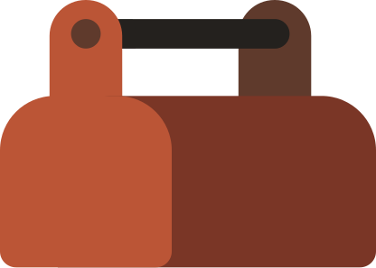
1. Estratégias
de cidadania
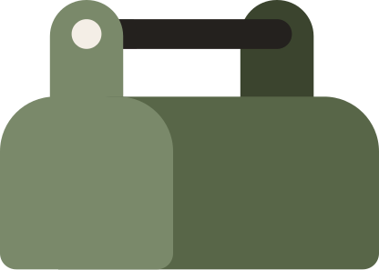
2. Estratégias
de fala e escuta
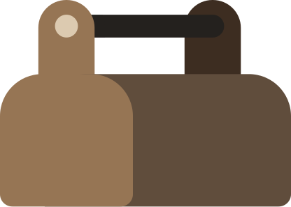
3. Estratégias
medicamentosas
Estratégias de cidadania
As estratégias de cidadania são eixo estruturante do trabalho com populações vulnerabilizadas e sustentam o trabalho da referência e das equipes de referência no que concerne a um norte no apoio às situações de crise. Aqui é quando o trabalho da referência ganha corpo ao ir avaliando no dia a dia quais ações práticas e institucionais vão minando a produção de diálogo e suspendendo a garantia de direitos. A percepção de autonomia e da dignidade humana em todas as etapas do atendimento é matéria primordial do trabalho.
Os direitos humanos não são apenas normas jurídicas, são o mínimo de uma relação entre dois ou mais seres humanos. É a partir da dignidade humana, base ética dos direitos humanos, que estabelecemos e sustentamos um diálogo, pois se entende que cada ser humano tem um valor em si mesmo, ou seja, não é preciso fazer nada para ter um valor e ser considerado, é independente da situação econômica, étnica, religiosa, categoria profissional, raça, gênero, orientação sexual ou condição psicossocial. O diálogo como consideração ampla do que o outro traz para a mesa só pode ser estabelecido se eu compreendo o outro à minha frente como tendo um valor por si mesmo.
A Constituição Federal de 1988 garante a dignidade humana como base no art. 1º:
Art. 1º A República Federativa do Brasil, formada pela união indissolúvel dos Estados e Municípios e do Distrito Federal, constitui-se em Estado Democrático de Direito e tem como fundamentos:
I - a soberania;
II - a cidadania;
III - a dignidade da pessoa humana;
IV - os valores sociais do trabalho e da livre iniciativa;
V - o pluralismo político.
Foi também nessa Constituição que crianças e adolescentes passaram a ter garantidos seus direitos por lei.
É óbvio que pensar que todos temos um valor em si mesmo não quer dizer isento de responsabilidade, aliás, pode ser muito bem o contrário. Só considerando o valor do outro que é possível pensar na responsabilidade de cada um.
As pessoas que vamos acompanhar têm também características singulares, com direitos garantidos por leis para cada situação e com riscos diferenciados à sua dignidade humana, as crianças e os adolescentes, as mães usuárias de substâncias, as pessoas que sofrem alguma discriminação por raça, gênero ou orientação sexual etc. Não se esqueça de estar atento e curioso e procurar saber o que já está garantido por lei e o que os movimentos sociais estão procurando garantir e reivindicar.
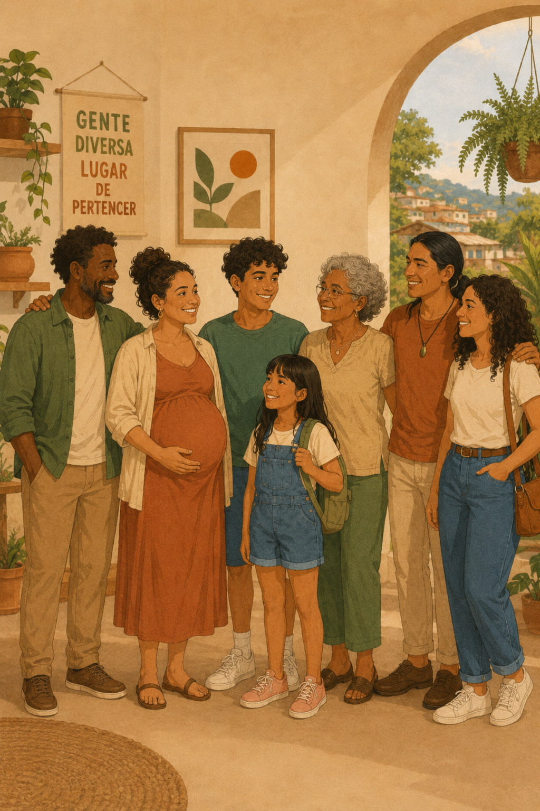
Na dúvida, procure a Defensoria Pública mais próxima ou organização social que trabalhe com garantia de direitos.

Nesse âmbito, sugerimos você acessar os seguintes vídeos:
• Dignidade humana, disponível em: https://www.youtube.com/watch?v=zoC-_joJgYA.
• Liberdade, disponível em: https://www.youtube.com/watch?v=RkGvgoWY1BY.
• Na sala da Maria: a Maria e os amigos conhecem os Direitos, disponível em: https://www.youtube.com/watch?v=cPyTnkqobCs.
• O que é o ECA?, disponível em: https://www.youtube.com/watch?v=tQDQ2uLQVno.
Como tornar essa ética uma prática no dia a dia de cuidados com pessoas que estão ou estiveram em situações de crise? Elenque momentos e cenas e ações práticas em que seria necessária a atuação da referência e da equipe de referência pensando especificamente no ganho possível ao garantir direitos humanos básicos.
Clique na caixa de ferramentas para conhecer suas características:
A Lei Brasileira de Inclusão da Pessoa com Deficiência (LBI)
A Lei Brasileira de Inclusão da Pessoa com Deficiência (LBI), também conhecida como Estatuto da Pessoa com Deficiência, é a Lei nº 13.146, sancionada em 6 de julho de 2015, e entrou em vigor em janeiro de 2016. Ela representa um marco legal na garantia dos direitos das pessoas com deficiência no Brasil, alinhando-se à Convenção sobre os Direitos das Pessoas com Deficiência da ONU (CDPD), da qual o Brasil é signatário.
As pessoas com deficiência incluem aquelas com “impedimento de longo prazo de natureza física, mental, intelectual ou sensorial, o qual, em interação com uma ou mais barreiras, pode obstruir sua participação plena e efetiva na sociedade em igualdade de condições com as demais pessoas” (Brasil, 2015, art. 2º), o que inclui as pessoas com transtorno mental grave.
A LBI é considerada uma norma de aplicação da Convenção sobre os Direitos das Pessoas com Deficiência no Brasil, incorporando seus princípios e reforçando o modelo de direitos humanos e inclusão, no tratamento sobre a questão. A CDPD reconhece que a deficiência não é apenas uma condição médica, mas resulta da interação entre impedimentos e barreiras sociais, culturais e ambientais.
Os principais avanços da Lei Brasileira de Inclusão da Pessoa com Deficiência dizem respeito à garantia de acesso ao sistema de saúde, ao sistema judiciário e ao trabalho e mobilidade, mas, principalmente, à capacidade jurídica, pois reconhece que as pessoas com deficiência têm capacidade civil, inclusive para se casar, votar, trabalhar, administrar bens, com apoio, se necessário, mas sem substituição de vontade.
Tomada de decisão apoiada e a CRPD
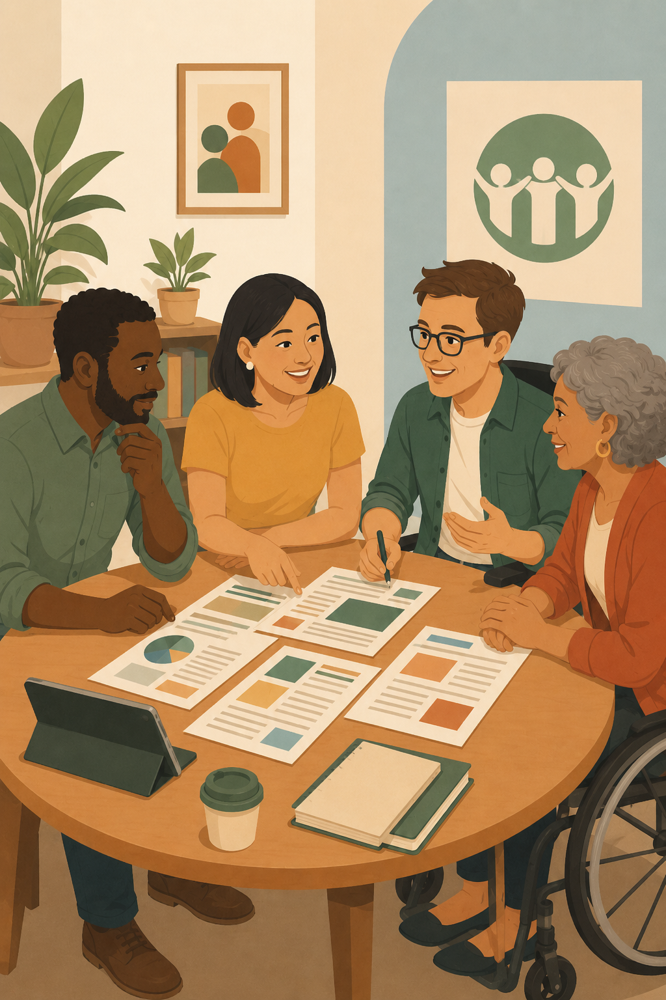
A tomada de decisão apoiada pode ser um instrumento processual para garantir o exercício da capacidade civil das pessoas com deficiência. Ela foi introduzida no Código Civil, artigo 1.783-A, pela Lei Brasileira de Inclusão da Pessoa com Deficiência (Estatuto da Pessoa com Deficiência), Lei nº 13.146/2015. A norma parte do reconhecimento de que toda pessoa com deficiência deve ter assegurado o direito ao exercício de sua capacidade civil em igualdade de condições com as demais pessoas em todos os aspectos da vida (art. 84) e cria um instrumento processual eficaz para auxiliar e apoiar a pessoa com deficiência a tomar decisões.
A tomada de decisão apoiada é um instrumento de proteção jurídica criado por lei para assegurar às pessoas com deficiência maior segurança e autonomia com o apoio que for necessário para a prática de determinados atos de sua vida civil. Muitos profissionais de saúde mental ainda não conhecem esse instrumento jurídico capaz de garantir um melhor posicionamento em relação à tutela de pessoas com desabilidades. É necessário discutir entre trabalhadores e usuários esse avanço e pensar formas de usar a legislação a favor dos direitos e da vida das pessoas com sofrimento mental. Existem avanços importantes, pois a tomada de decisão apoiada estabelece outro modelo jurídico para pessoas que antes eram privadas de possibilidade de decisão. Imagine os efeitos da utilização dessa nova forma em um projeto terapêutico singular!
O art. 12 da CDPD afirma que pessoas com deficiência têm o mesmo direito de ser reconhecidas como pessoas perante a lei e de exercer sua capacidade jurídica em igualdade de condições com os demais e estabelece:
• Capacidade jurídica: pessoas com deficiência têm o direito de ser
reconhecidas como sujeitos de direitos em todos os aspectos da vida –
pessoal,
financeira, familiar, política.
• Exercício da capacidade jurídica: devem poder tomar decisões
por si
mesmas, com apoio quando necessário, e não serem substituídas por curadores
ou
tutores.
• Apoio à tomada de decisão: os estados devem oferecer mecanismos de
apoio
para que a pessoa possa exercer sua vontade de forma autônoma.
• Salvaguardas contra abusos: o apoio deve ser regulado por
salvaguardas
que respeitem os direitos, a vontade e as preferências da pessoa, evitando
abusos, conflitos de interesse ou influência indevida.
Com isso, temos as seguintes implicações práticas:
• Fim da substituição de vontade: o modelo tradicional de curatela, em
que
outra pessoa decide pela pessoa com deficiência, é incompatível com esse
artigo.
• Modelo de apoio à decisão: propõe-se um sistema em que a pessoa com
deficiência receba ajuda para compreender, comunicar e implementar suas
decisões, sem que sua vontade seja ignorada.
• Direitos patrimoniais e civis: inclui o direito de possuir bens,
controlar finanças, ter conta bancária, assinar contratos, casar-se, votar,
entre outros.
De objeto a sujeito: dois modelos de cuidado e cidadania
Acompanhe, no quadro a seguir, o comparativo entre o modelo tradicional de curatela e o modelo de apoio à tomada de decisão, conforme a Convenção sobre os Direitos das Pessoas com Deficiência em seu artigo 12:
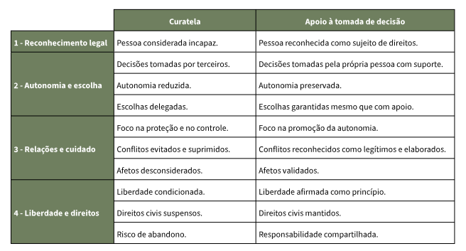
Acesse os seguintes documentos e instrumentos importantes:
• Convenção
sobre os Direitos de Pessoas com Deficiências
• Protocolo
Facultativo à Convenção sobre os Direitos de Pessoas com Deficiências
• Pacto Internacional sobre os Direitos Econômicos, Sociais e Culturais (Decreto nº
591/1992)
• Convenção contra a Tortura e Outros Tratamentos ou Penas Cruéis, Desumanos
ou Degradantes (Decreto nº
40/1991)
• Monitoramento
da Convenção sobre os Direitos de Pessoas com Deficiências: orientação para
monitores de direitos humanos (em inglês).
• Relatório
Interino do Relator Especial sobre a tortura e outros tratamentos ou penas
cruéis, desumanos ou degradantes (em inglês)
Estratégias de fala e escuta
Com Antônia, foi possível ver que a mudança do fora, a saída do manicômio, é “altamente fértil para a produção de subjetividade”, como Antônio Lancetti (2006) sublinha ao falar sobre a desmontagem manicomial de Santos. A partir de 1989, as portas da Casa de Saúde Anchieta foram abertas e os pacientes passaram a circular em outros settings, em outros espaços, que produziram novidades e outras subjetividades e cidadania. A mudança do espaço-tempo institucional altera o que às vezes chamamos de interno à pessoa, ou seja, a fala e a escuta aqui são ligadas ao espaço e tempo do sujeito.
Além da mudança de setting, é preciso saber daquilo que atrapalha a escuta mesmo fora do hospital psiquiátrico e que esconde a fala do outro, a fim de encaixar em um modelo pronto, seja psiquiátrico, psicológico, do campo da enfermagem, seja um modelo religioso ou político. Para a mudança no cuidado, exige-se a ruptura com os muros institucionais do hospital, mas também “com os muros que se produzem cotidianamente nas formas de conhecer e de interagir com a demanda” (Nicácio; Campos, 2004). Complexificar a demanda psiquiátrica, dar mais cor ao que se vê daquela pessoa, construir novas histórias sobre a mesma pessoa, as informações que produzimos sobre ela, exige que o trabalhador seja capaz de escutar e de falar para além desses moldes e dos jargões do campo.
Escute o áudio a seguir para reconhecer as chaves de leitura. Acesse a transcrição aqui.
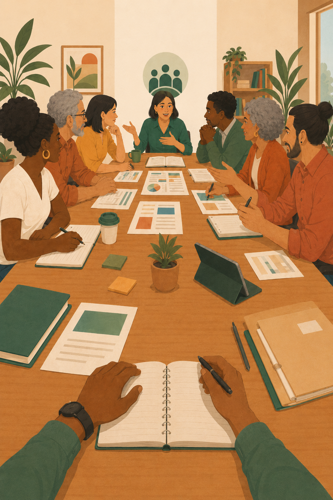
Depois de debelada a briga entre dois usuários do CAPS AD na hora do almoço, a equipe da convivência se dividiu para compreender o que aconteceu e conversar com aqueles que estavam na cena. O usuário que mais apanhou requisita especificamente o educador físico, com quem tem boa relação. Rapidamente, os profissionais voltam a se reunir e chamam todos os outros profissionais do CAPS para uma assembleia emergencial. Alguns não querem participar, estão irritados com a postura da equipe da tarde, acham que são displicentes com os usuários, e outros não veem necessidade de assembleia.
Diante da discussão, o gerente faz sua escolha e opta pela realização da discussão coletiva, direcionando os profissionais para o espaço. Na assembleia, o clima é quente, percebe-se que o uso dos recursos do almoço e do grupo de futebol está sendo disputado violentamente, e é necessário rediscutir o que fazer. Há outras questões que têm a ver com a convivência à noite, na Ponte dos Prazeres, principal ponto de uso de álcool da cidade.
Entre dar crédito para um ou para outro, optou-se por discutir o problema na roda, de maneira mediada e atenta. Os dois usuários, mais calmos, concordam em participar, e são aconselhados a manter o debate verbal e não físico. Um deles cita o educador físico e o que conversou com ele, mesmo sem concordar. Há momentos de muita tensão, e o trabalho da equipe é fundamental para fazer os mais quietos falarem e manter a conversa acontecendo. Alguns usuários colocam o cansaço com as brigas e sugerem expulsão dos dois. O gerente, que se esforçava para mediar também, intervém dizendo de maneira mais incisiva: “Vocês nunca brigaram aqui? Também estou cansado e podemos pensar em várias soluções, mas nenhuma delas é expulsão”.
A assembleia decidiu fazer uma campanha “CAPS – território livre de porrada” e foram feitos cartazes explicativos sobre isso. Em um dos cartazes, estava escrito: “Você está puto com alguém aqui do CAPS? Chame um amigo, sua referência ou alguém do apoio para mediar a conversa”. Foi realizado também um novo momento mediado entre os dois envolvidos com a presença do gerente. O educador físico na passagem de plantão revela que a conversa com o usuário foi longe e trouxe conteúdos que ele não esperava sobre abusos na infância. A equipe se esforça para que o educador físico sustente a escuta desse assunto delicado, pensando na escolha que o usuário fez, e discute as implicações da revelação tal como foi feita. Alguns medos dos profissionais em relação à violência também foram compartilhados na passagem de plantão.
Veja que a direção de cuidado aí envolveu uma escuta balizada na aposta em realizar cada vez mais conexões, as quais fazem a contenção das inúmeras rupturas possíveis no curso de duas horas dentro do serviço e revertem a lógica asilar da segregação que aparece em qualquer etapa. Temos aí abertura e maleabilidade da equipe, aposta no norte consensual (mas nem sempre chegando a ele) e troca de bens, mensagens e afetos; conteúdos subjetivos e intersubjetivos acolhidos e que agora precisam ser pensados de acordo com os projetos terapêuticos de cada um; e até a proposta de um trabalho renovada na Ponte dos Prazeres com os colegas do Consultório da Rua e da UBS.
Pensar em estratégias de fala e escuta pode envolver muita discussão entre a equipe de apoio, porque envolve estratégias mais ou menos coletivas, e toda sorte de momentos que acontecem em um serviço de saúde. Mas em todas as situações é necessário que o profissional saia do automático da escuta que procura sinais e sintomas com voracidade e se concentre também no conteúdo e na forma do que a pessoa fala. Se alguém em mania está me contando como foi o dia anterior, o profissional recua de uma vontade de perguntar se a pessoa comprou tudo o que tinha no shopping e vai acompanhando as descrições e elaborações que a própria pessoa vai fazendo.
Agora, clique em cada ferramenta e arraste para dentro da caixa.
Diálogos abertos
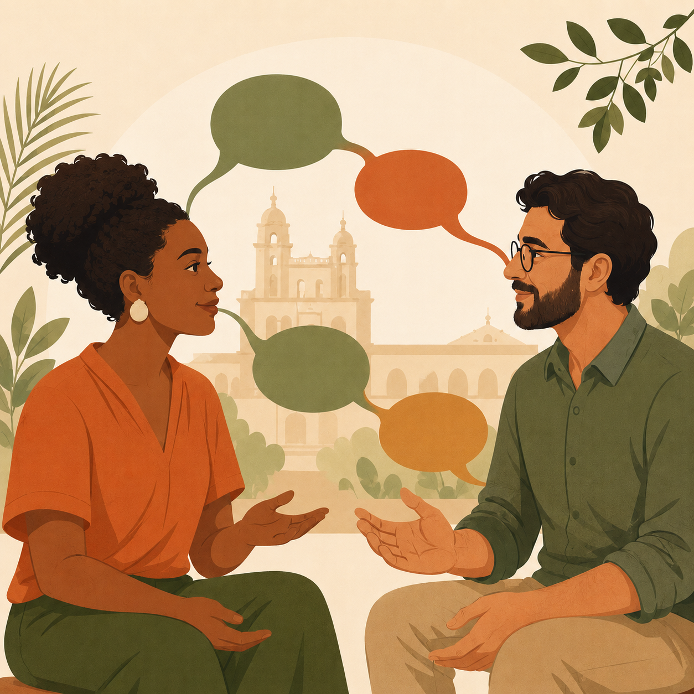
É uma abordagem psicoterapêutica e de organização de serviço de cuidado criada na Finlândia, nos anos 80, a qual tem sido adotada em diversos países, tendo sido incluída em novas recomendações da OMS para desenvolvimento de serviços centrados na pessoa e na garantia de direitos. É um modelo de cuidados de partilha democrática dos saberes entre equipes e usuários em um modelo de gestão de crise centrado no paciente, que não recorre sistematicamente à hospitalização nem aos medicamentos antipsicóticos. Dá atenção às emoções vivenciadas pela pessoa em crise em vez de apenas aos seus sintomas, assim como em uma estratégia de integração do paciente em uma comunidade.
Todos esses aspectos foram fomentados durante todo o curso, não é novidade para você, cursista. O dialogismo, a sustentação do diálogo, assume lugar importante central nessa prática e diferencia um discurso dialógico de um discurso monológico.
Clique nos termos a seguir para conhecer as características de tais discursos:
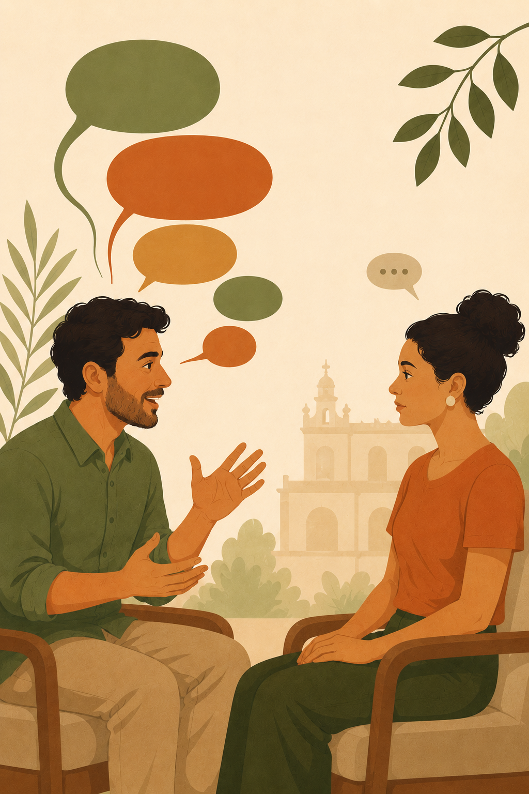
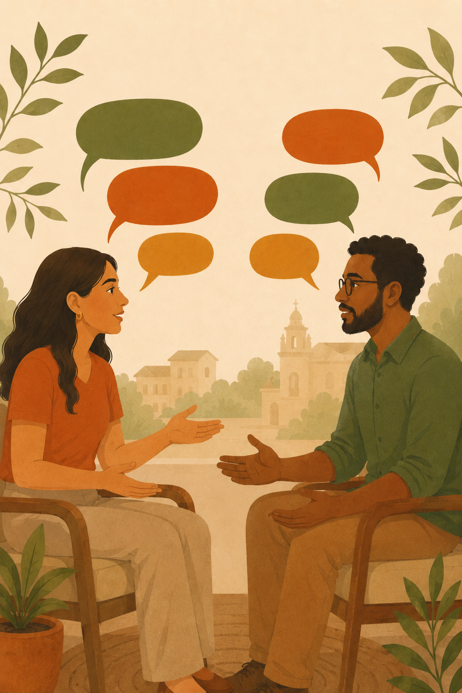

Que tal você propor um exercício em dupla ou em grupo? Esse exercício pode ser realizado toda vez que um caso for discutido, como forma de pensar outros caminhos possíveis ainda não imaginados. Outras histórias e outras conexões.
Pense em uma cena vivida de diálogo com usuário e tente melhorar o que aconteceu.
Que outras frases podemos usar? Como considerar na resposta a fala do outro, mesmo que não pareça ter muito nexo?
Não se contente apenas com uma possibilidade, explore várias respostas possíveis.
Como implementar na prática diálogos abertos?
A implementação exige mudanças culturais, institucionais e formativas. Sugerimos que ela seja realizada conforme as seguintes etapas:
1. Formação da equipe
○ Capacitação em escuta ativa, abordagem dialógica e trabalho em rede.
○ Supervisão contínua e espaços de reflexão coletiva.
2. Organização territorial
○ Atendimentos realizados preferencialmente no território da pessoa (domicílio,
CAPS, espaços comunitários).
○ Articulação com serviços da rede (saúde, assistência, educação).
3. Resposta rápida
○ Criar fluxos que permitam o primeiro encontro em até 24h.
○ Evitar encaminhamentos fragmentados ou excessivamente burocráticos.
4. Registro e acompanhamento dialógico
○ Documentar os encontros com foco na construção conjunta.
○ Evitar linguagem técnica que exclua os participantes.
5. Avaliação participativa
○ Criar espaços de escuta da rede sobre o processo de cuidado.
○ Incorporar indicadores qualitativos (vínculo, autonomia, retorno às
atividades).
Dicas para adaptação para cada território:
✓ Valorizar saberes locais e práticas comunitárias.
✓ Traduzir os princípios para linguagens acessíveis (ex.: cartilhas, quadros visuais).
✓ Incluir usuários e familiares na formação das equipes.
✓ Usar o diálogo aberto como inspiração para práticas de desinstitucionalização e cuidado em liberdade.
Nesse âmbito, sugerimos você acessar os seguintes vídeos:
• Diálogo Aberto na prática no Brasil
• Os fundamentos da abordagem Open Dialogue (Diálogo Aberto)
Além disso, leia o artigo Open dialogue: o diálogo em benefício da saúde mental.
Redução de danos (RD)
Para além de estratégias específicas voltadas para o cuidado de pessoas que fazem uso abusivo de álcool e outras drogas, a redução de danos (RD) transforma o paradigma do cuidado, rompendo com a lógica da abstinência para uma ética do acolhimento, cuidando de pessoas independentemente de estarem ou não em contexto de uso. É uma ruptura de um modelo policialesco, normalizador, que desconsidera as possibilidades e necessidades da pessoa acompanhada. A partir dela, outras possibilidades de atenção psicossocial podem emergir, desde uma dor de dente até o desejo de trabalhar. Assim, reduzir danos se apresenta como garantia de direitos fundamentais, não se restringindo ao uso específico de alguma droga. A RD também pode ser implementada em outros contextos que não envolvem substâncias psicoativas, abrangendo questões da vida que vulnerabilizam a existência, especialmente em contexto de crise.
Escute o áudio a seguir para reconhecer as práticas de redução de danos. Acesse a transcrição aqui.
Outra ruptura importante foi a participação ativa do usuário na construção do seu projeto de vida. Ora, ao não mais prescrever a condição e o objetivo final do tratamento (a abstinência), cabe agora indagarmos: quais os seus objetivos? Como podemos alcançá-los? Quais fatores de vulnerabilidade física, psíquica, social estão associados a esses usos? Como podemos construir estratégias para lidar com eles? Que ferramentas podemos construir para avaliar o avanço do cuidado a que nos propomos?
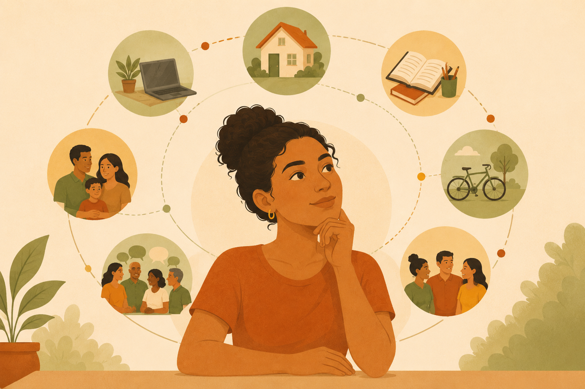
A suspensão do julgamento moral sobre o usuário de drogas também é um ponto de destaque da RD. Se todo uso de drogas era visto como “fraqueza”, “doença”, “vadiagem” ou “pecado”, frequentemente as pessoas omitiam suas relações com essas substâncias, temendo serem estigmatizadas pelas pessoas de seus convívios sociais. Ao abordar essa questão por outro viés, a partir de olhares mais humanizados, respeitosos e garantidores de direitos, novas relações puderam ser construídas entre usuários, equipes e serviços, ampliando e fortalecendo os vínculos entre estes.
Atualmente, as práticas de redução de danos fazem parte da política nacional de saúde mental, álcool e outras drogas, presentes, por exemplo na Portaria de Consolidação nº 5/2017, do Ministério da Saúde, e na Lei Brasileira sobre Drogas, Lei nº 11.343/2006 (alterada pela Lei nº 13.840/2019). Mas, como, na prática, podemos implementar essas ações? Trazemos alguns exemplos para ilustrar a lógica dessa política (Niel; Silveira, 2008). Mas lembremos sempre que essas estratégias devem dar conta da singularidade e complexidade do indivíduo, não devendo ser aplicadas de maneira descontextualizada. A seguir, apresentamos exemplos para a redução de danos associados ao uso de álcool, por se tratar da substância mais utilizada no Brasil.
No vídeo a seguir, o pesquisador Francisco Netto apresenta algumas questões sobre a eficácia, a garantia de direitos e práticas concretas de redução de danos.
Acesse em: https://www.youtube.com/watch?v=L2PwjLckgKc.
Algumas sugestões de redução de danos para álcool são:
✓ Ingerir água e outros líquidos antes, durante e após o uso de bebidas
alcoólicas.
✓ Não ingerir álcool de estômago vazio.
✓ Evitar beber muito em pouco tempo (virar copo, tomar shots, por exemplo).
✓ Não misturar bebidas alcoólicas.
✓ Escolher bebidas com menores teores alcoólicos.
✓ Evitar comportamentos de risco, como brigas, perda de consciência e coma
alcoólico.
✓ Selecionar pessoas de confiança para estar junto.
✓ Não dirigir motos, carros e outros veículos.
✓ Estabelecer limites para encerrar a bebedeira (quantidade, hora etc.).
Sugestões de práticas de RD para o uso de substâncias injetáveis, inaláveis e fumadas estão disponíveis em:
Redução de danos na prática
A seguir, apresentamos alguns caminhos possíveis para adaptar os princípios da redução de danos às demandas das pessoas que são acompanhadas pelos dispositivos da Rede de Atenção Psicossocial. O objetivo é a construção coletiva de um projeto terapêutico singular (PTS). Equipe de referência, usuário e pessoas que integram sua rede de cuidados devem ser incentivados a participar. A partir dos encontros, refletir sobre os usos estabelecidos e os danos associados a estes. Aqui é fundamental lembrar da concepção de integralidade em saúde, ou seja, devemos compreender o sujeito como um todo: corpo, mente, relações familiares, comunitárias, culturas, ancestralidade, espiritualidade, justiça, direitos humanos, entre outras.
A construção de um projeto terapêutico singular (PTS) orientado pelos princípios da redução de danos (RD) deve acompanhar as etapas subsequentes. Clique nelas para conhecê-las:
Banco da Amizade e experiência com as avós no Zimbabwe
Uma senhora, sentada em um banco, diz para uma mulher que está sentada à sua frente: – Estou aqui para você, você quer compartilhar sua história comigo?
A bela experiência do Zimbabwe se espalhou por outros países do mundo, e, em Nova York, bancos laranjas foram incorporados a alguns espaços para dar início a estratégias. Nesse país do sudoeste do continente africano, um grupo de avós foi contratado e recebeu capacitação em técnicas psicoterápicas breves para contribuir no cuidado de pessoas com kufungisisa, a palavra usada como equivalente para depressão, e que, literalmente, seria traduzido como “pensar demais”.
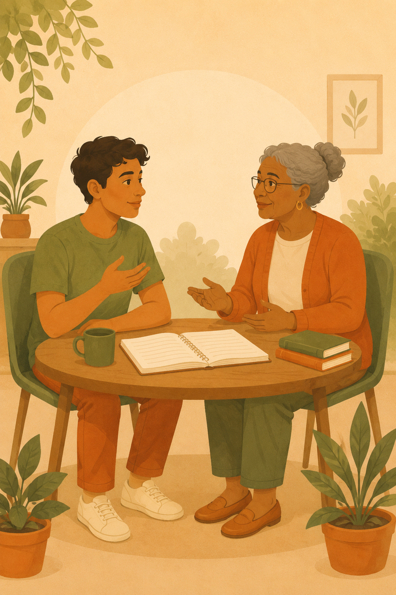
A iniciativa começou pelo psiquiatra Dixon Chibanda, um dos 12 psiquiatras do país, que agiu em relação às dificuldades de locomoção e acesso a profissionais de saúde. Já foram qualificadas mais de 400 avós, e, ao ser perguntado sobre a genialidade do programa, Chibanda diz: “[…] não é verdade. Eu só tive de trabalhar com o que tinha”.
É interessante compreender a evolução da experiência. As avós e Chibanda começaram a perceber que o uso de termos da psiquiatria ocidental não funcionava, e as avós insistiram que era preciso trabalhar com conceitos culturalmente enraizados. Chibanda comenta que o sucesso da experiência talvez esteja aí: em unir conhecimento e sabedoria.
Nesse âmbito, sugerimos você acessar os seguintes links:
• Um time de avós: a inovadora estratégia do Zimbábue para atender a pacientes com depressão
• Médico psiquiatra do Zimbabwe cria projeto de psicoterapia para democratizar a saúde mental
Acompanhamento terapêutico (AT)
Um importante exemplo sobre estratégias de cuidado em saúde mental flexíveis, inventivas e com efeitos já bem consolidados quanto à sua potência terapêutica é a modalidade do acompanhamento terapêutico (AT). Inicialmente chamada de auxiliar psiquiátrico, assistente psiquiátrico e amigo qualificado, as intervenções desses profissionais advêm dos processos das reformas psiquiátricas, do combate às internações asilares e do fortalecimento da atenção psicossocial (Acioli Neto; Amarante, 2013).
O trabalho do AT consiste em acompanhar a pessoa atendida nos diversos espaços onde circula: casa, rua, hospital, unidade de saúde, igreja, trabalho etc. Objetiva-se a imersão no território relacional do usuário, conhecendo familiares, amigos, colegas de trabalho e outras redes de apoio construídas de forma autônoma. Nesse sentido, ao transitar por tais espaços e redes, algumas funções desses profissionais vão se desenhando.
Dentre as muitas funções, destacamos: construir vínculos mais intensos e profundos com a pessoa acompanhada, reconhecendo potências para o desenvolvimento da desejada autonomia do outro (práticas de cuidado, habilidades e desejos, por exemplo); inserir-se nas relações que impactam a saúde mental cotidiana, conhecendo redes de afetos e conflitos até então desapercebidos pelas equipes e pessoas de referência; mediar as interações com a comunidade da qual a pessoa faz parte, promovendo a reinserção social na prática de tarefas diversas e construindo estratégias de enfrentamento das dificuldades que possam surgir.
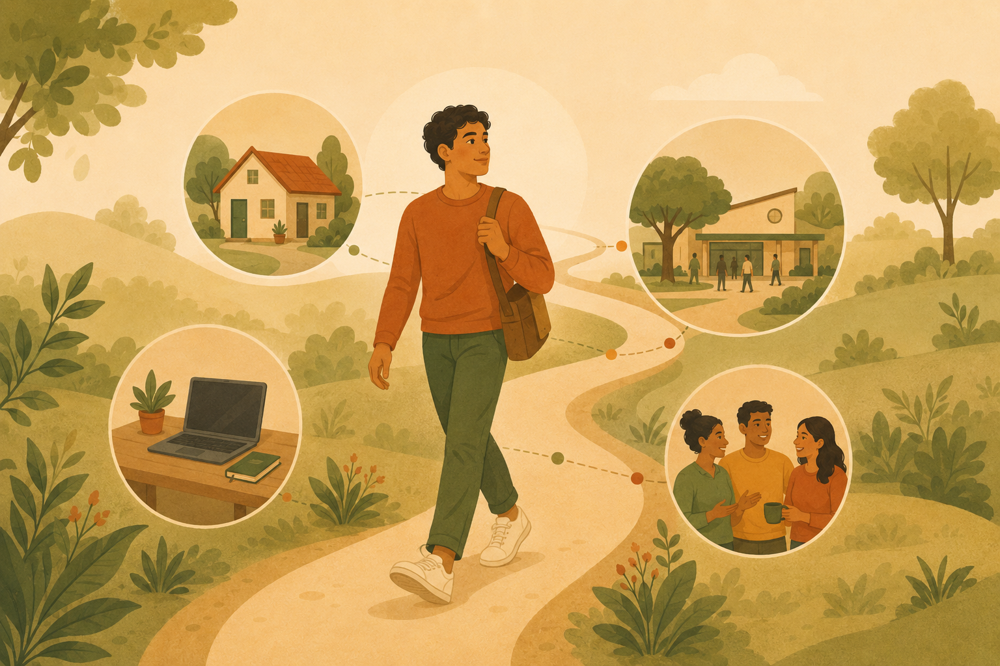
Santos, Motta e Dutra (2005) destacaram as pontes que os acompanhantes constroem também para a prevenção de crises e internações. Dizem:
Trabalhando na perspectiva de evitar internações, ou pelo menos minimizá-las, os ATs possibilitam que haja uma certa ponte entre os espaços de tratamento, podendo diminuir a fragmentação que o psicótico, às vezes, enfrenta. O AT está no intervalo entre um lugar e outro, entre a casa e o hospital-dia, por exemplo. É uma espécie de agente da mobilização (Santos; Motta; Dutra, 2005, p. 500).
Por exercer o cuidado no território, o AT também tem se mostrado potente para o fortalecimento da rede de cuidados, articulando diversas ações e serviços de interesse da pessoa, tanto dentro da saúde (relações entre UBS, CAPS e hospital geral) quanto fora dela (escola, CRAS e igreja). A participação ativa na construção e na efetivação dos projetos terapêuticos singulares (PTS), nos estudos de caso e nas reuniões de equipe também é atribuição desses profissionais, devendo construir relações próximas com os demais agentes do cuidado.
Por ocupar esses espaços privilegiados junto à pessoa acompanhada, temos a possibilidade de inventar novas formas de cuidados para aquela pessoa, bem como ajustar formas construídas anteriormente. A flexibilização das intervenções é fundamental para o manejo da relação do AT com a pessoa e com as equipes. Dançar conforme a música, ajustando os gestos, intensificando e diminuindo o ritmo em consonância com o cotidiano vivido.
Na atenção e no manejo de situações de crise, a atuação do AT mostra que pode operar de forma a identificar vulnerabilidades afetivas importantes e por vezes não percebidas pelas pessoas acompanhadas. Sua presença também funciona como ferramenta antimanicomial, intervindo à medida que direitos fundamentais como a liberdade, a dignidade e a autonomia dos usuários sejam violados. E, mesmo quando as estratégias utilizadas não derem conta de evitar as internações, o acompanhante terapêutico ainda pode contribuir.
A relação com as equipes também pode ser conflituosa, podendo produzir resistências de ambas as partes. Frente a tudo isso, Ferro et al. (2018) propuseram um fluxograma básico para a construção, execução e avaliação do acompanhamento terapêutico. O objetivo é minimizar as dificuldades que enfrentaram ao longo dos anos de implementação do serviço no SUS:
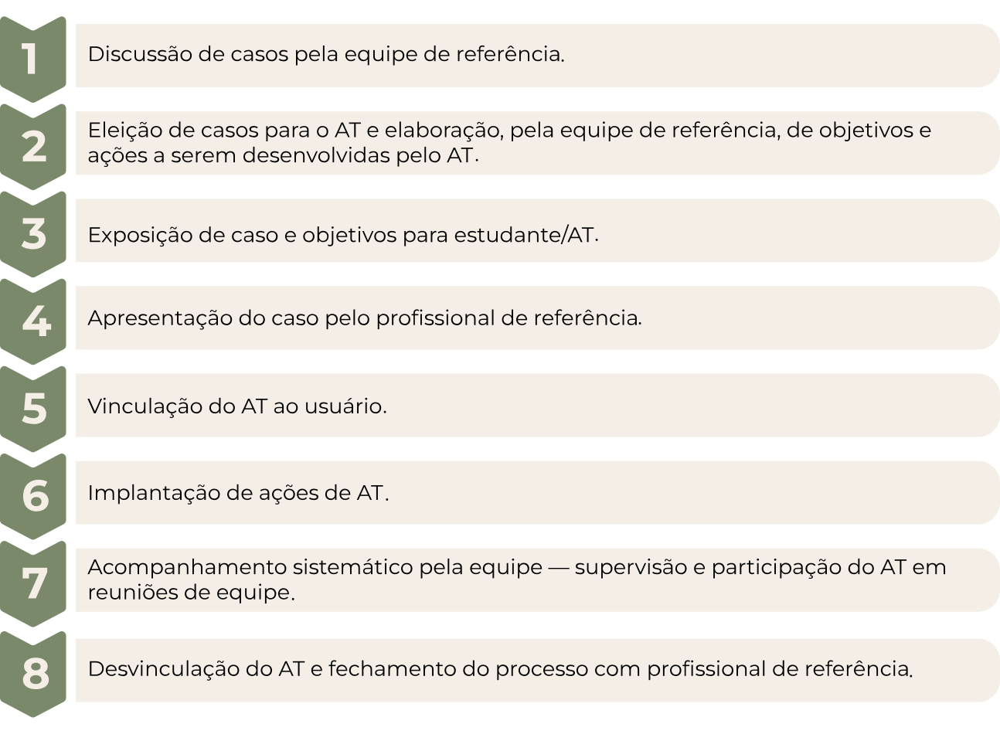
Por fim, lembramos que a atuação do acompanhante terapêutico (AT) deve estar sempre alinhada aos princípios da Reforma Psiquiátrica brasileira (resumidos na Lei nº 10.216/2001). Algumas instituições podem dispor do cargo de AT para reprodução de práticas manicomiais, como a imposição de castigos físicos, torturas, maus-tratos e outros. Os princípios do acompanhamento terapêutico estão implicados com as garantias de direitos fundamentais para pessoas com transtornos mentais, não podendo ser dispostas de modo contrário a estes.
Primeiramente, assista ao vídeo Um fato duas visões: acompanhamento terapêutico.
Agora, responda coletivamente às seguintes perguntas:
a. Você já conhecia a modalidade do acompanhamento terapêutico
(AT)? Se sim, compartilhe com os demais.
b. Em quais aspectos dessa prática você se interessou mais?
c. Em que situações você acredita que esses profissionais
podem contribuir mais?
d. Para qual usuário você indicaria a intervenção do AT?
e. Que instituições podem contribuir para implementação do
AT no serviço onde você atua?
f. Que características você julga necessárias para uma
pessoa se tornar AT?
Grupo de Ouvidores de Vozes
Os grupos de Ouvidores de Vozes começaram na década de 80 com o Hearing Voices Movement, na Holanda, e vêm conquistando espaço entre usuários e profissionais que buscam ultrapassar a limitação dos métodos tradicionais, os quais muitas vezes buscam eliminar as vozes. Já existem redes em mais de 30 países e no Brasil, já existem em muitos municípios e estados, e vêm se configurando como importante espaço de apoio entre pares e de mudança na perspectiva do que são os sintomas mais clássicos e estereotipados na vida das pessoas que ouvem vozes.
O apoio entre pares caracteriza-se por uma relação horizontal de cuidado, baseada na experiência vivida compartilhada, na qual não há hierarquia entre quem apoia e quem é apoiado. Diferentemente das relações tuteladas, esse tipo de apoio se sustenta no reconhecimento mútuo, na identificação e na troca, permitindo que o sofrimento seja compreendido a partir de quem já atravessou experiências semelhantes. A experiência pessoal transforma-se em saber legítimo, favorecendo a produção de vínculo, pertencimento e autonomia, ao mesmo tempo que reduz o isolamento e o estigma.
O objetivo principal do grupo é oferecer um espaço seguro para que aquele que ouve vozes possa compreender o porquê ouve e o que ouve, ajudando a criar outra relação com esses conteúdos.
Nesse âmbito, sugerimos você acessar os seguintes links:
• Entendendo a experiência de ouvir vozes
• Grupo de Ouvidores de Vozes: um Relato de Experiência
O básico bem feito: assembleias, reuniões de organização diárias e conselho gestor local
As assembleias dos serviços de saúde mental costumam acontecer rotineiramente em grande parte dos CAPS. É o espaço mais amplo de decisões e a ideia é que participem trabalhadores de todos os níveis, usuários, gestores e comunidade. Mas qual o sentido desse espaço? São verdadeiramente assembleias nas quais se discutem assuntos de relevância? Os profissionais participam ou sempre arrumam outro compromisso no horário? Os debates são incentivados ou silenciados? Como aparece a crise nesses espaços?
Usualmente, acontecem uma vez por semana. Menos do que isso, a assembleia provavelmente perdeu sua capacidade de decidir sobre os assuntos, virando espaço esvaziado, burocrático e sem graça. Em alguns momentos, é possível fazer a assembleia porque algum evento de importância aconteceu no território e nos serviços, e é preciso coletivizar as informações e a elaboração. Como foi o caso da briga no CAPS AD, em que o plantão decidiu fazer uma assembleia, mesmo não sendo o dia da assembleia. Essa ação foi importante para externar dificuldades da equipe e dos usuários, todos cansados das brigas que estão acontecendo todos os dias no CAPS. Como dizia Antônio Lancetti: “o grupo tem sabedoria”. Uma sabedoria que às vezes não se alcança olhando sozinho para o problema. O grupo é justamente um momento de conexões que possibilitam um produto que não se alcançaria sozinho.
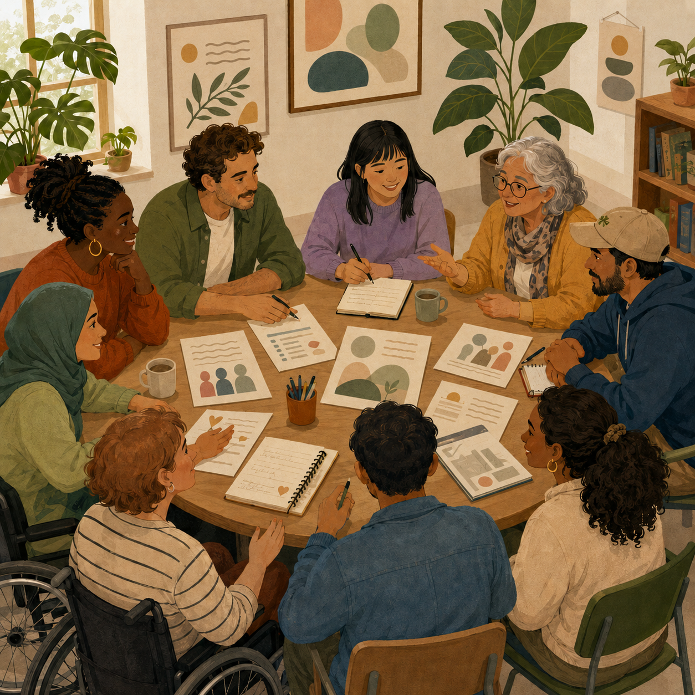
As assembleias são espaços evitados por muitos profissionais e não sem razão. Ali é que os poderes dos trabalhadores são colocados em xeque, e isso é difícil de suportar para alguns. O trabalhador pode assumir uma posição de objeto, tradicionalmente atribuída ao paciente. Nessas reuniões, o usuário pode trazer a proibição de entrar na cozinha dada pelo novo gerente, e colocar assim a equipe para se posicionar e discutir o assunto. A assembleia é, então, mais um espaço em que se realizam as conexões entre duas ou mais pessoas, sejam elas trabalhadoras, sejam usuárias do serviço. Para a conexão, é fundamental ocupar e revezar o lugar: às vezes objeto, às vezes sujeito.
As reuniões de organização diária, que podem ter vários nomes, são pequenas assembleias realizadas no início de um plantão, puxadas pelos profissionais ou usuários que estão no dia e com quem estiver no serviço, esperando na recepção para ser atendido pelo médico ou ser chamado pela farmácia. Essa reunião tem muitos sentidos, mas colabora para um clima de ajuda mútua e de interação entre os presentes, além de organização daquilo que o plantão precisa dar conta ao longo do dia ou do turno.
O dia pode ser organizado a partir das demandas que surgem ali, e é possível já perceber quem está precisando de mais apoio e quem pode ajudar com esse apoio, seja usuário, seja trabalhador, ou ainda a necessidade de um contato da rede de serviços. Muitas ideias surgem dessas reuniões de organização diária: um karaokê na recepção, o passeio pela feira, a escala para ficar perto do Diego (que está com muito medo porque as vozes estão muito fortes esses dias), o começo da organização da festa junina, a divisão para ver quem vai buscar a roupa de Aline, que precisou dormir no CAPS, mas não tem roupa de frio...
Esses dois espaços, se realizados de maneira dialógica, podem se tornar ferramentas ímpares de organização, elaboração, construção de conexões e, principalmente, ajudar na tarefa de continência grupal dos afetos e sofrimentos em jogo naquele dia, misturando pessoas em crise e pessoas que não estão em crise. Abrir-se para uma verdadeira coletivização do que fazer sobre os assuntos do serviço ou no território. Experimente!
Conheça o relato de experiência Protagonismo político em pauta: as assembleias no CAPS I.
Os conselhos gestores locais são parte de uma estratégia ampla de controle social do SUS. É uma das características que torna o SUS tão bonito e interessante, pois garante que a sociedade civil participe das decisões dos serviços de seu território, produzindo e incentivando um ambiente democrático, participativo e horizontal. Já foram chamados de Conselhos da Comunidade, e é um órgão colegiado composto de representantes dos segmentos gestor, trabalhador e usuários dos serviços. O Conselho é uma forma de assegurar a participação popular na gestão dos serviços de saúde, e é garantido por lei.
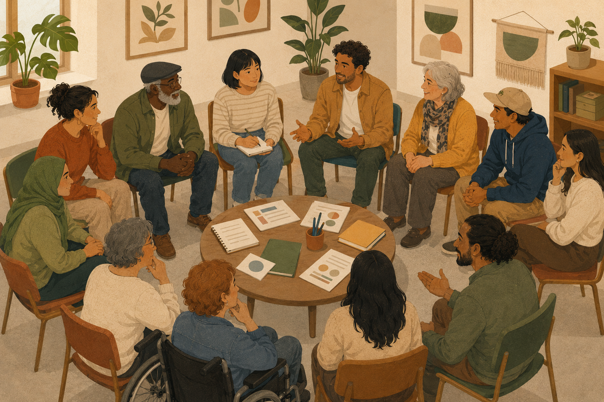
Boa parte do trabalho é participar da gestão do serviço de saúde, entendendo que essa gestão deve ser participativa e compartilhada. Para desenvolver essa função, os conselheiros deverão adquirir conhecimentos sobre a legislação, as formas de participação social e os instrumentos e ferramentas de gestão. Seus representantes são escolhidos por eleição direta, realizada no próprio serviço.
Na prática, os conselheiros podem:
• Levar questões que identificaram em seus bairros. Por exemplo, quando Antônia levou para o conselho gestor do CAPS que alguns usuários de crack e pessoas em situação de rua estavam começando a se concentrar no dia da feira para pedir comida e dinheiro.
• Discutir prioridades das ações dos serviços. Depois de conversarem sobre a questão de drogas e sobre a atuação do CAPS AD no município, conselheiros decidem chamar uma roda de conversa no dia da assembleia para discutir o assunto de pessoas que não têm onde morar.
• Acompanhar a execução e os resultados das estratégias. Depois da roda de conversa, Antônia se sentiu mais apropriada para discutir o assunto e passou a entender melhor a situação dos usuários de crack. Ao mesmo tempo, avaliou que o CAPS estava fazendo pouco para resolver a situação e disse que os vizinhos estavam incomodados. Após essa avaliação, passaram a discutir em reunião como o CAPS pode ou não agir nessas questões.
Você sabe se já foi implementado o Conselho Gestor na Unidade de Saúde que
trabalha ou frequenta?
Você sabe se o seu município tem algum curso para conselheiros gestores?
Para se aprofundar nos Conselhos Gestores, acesse a cartilha produzida pela Prefeitura de São Paulo em 2016, disponível em:
Estratégias medicamentosas
Ações práticas que incentivem a sustentação do diálogo e a sustentação da garantia de direitos no uso e na dispensação de medicação. Destacaremos as práticas de gestão autônoma da medicação.
Agora, clique em cada ferramenta e arraste para dentro da caixa.
Gestão autônoma de medicação
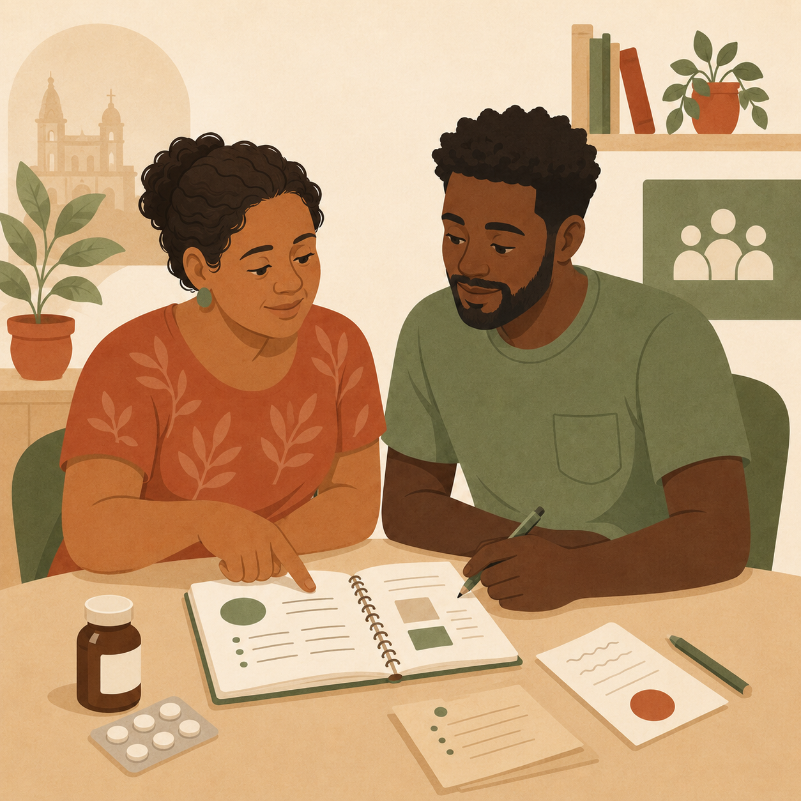
Esta é uma prática em ascensão no SUS, basicamente consiste em considerar os usuários como protagonistas e corresponsáveis na gestão do próprio tratamento com medicamentos, participando da decisão de usá-los e do modo como usá-los. Um processo de aprendizagem sobre o próprio cuidado. Todos que fazem uso de medicação para questões crônicas, sejam psiquiátricas ou não, acabam achando usos adaptados à própria situação e, em vez de punir essas práticas, vale ajudar a melhorar essas adaptações, trabalhando juntos para um tratamento com menos efeitos indesejados.
Conheça algumas ações que você pode implementar no seu território:
• Formação de apoiadores e multiplicadores de práticas GAM
• Guia da Gestão Autônoma da Medicação
• GAM (Gestão Autônoma da Medicação) e seus benefícios para a saúde mental
4. Estratégias de apoio por pares
5. Estratégias com saberes e práticas tradicionais
6. Estratégias antecipatórias: diretivas antecipadas (DA)
7. Estratégias com família
8. Estratégias para o habitar
9. Estratégias de trabalho, renda e emprego
Estratégias de apoio por pares
Com as ações práticas, estamos ajudando a criar outras versões da mesma pessoa, como Antônia, que passou de “tigrona” do hospital à organizadora do café, frequentadora da igreja, entre outros. Isto é, outras conexões e, com isso, mais papéis sociais para a mesma pessoa, que antes só era vista como doente e agora é vista como mãe, trabalhadora, consumidora, estudante etc. Uma das conexões importantes que as ações indiretas podem fazer é a conexão e parceria entre pessoas que passam por situação parecida de sofrimento, e um papel social possível a ser desenvolvido é o de apoio ou cuidado.
Aliás, essa é uma das questões de Antônia com a irmã, pois, mais uma vez, a usuária foi perdendo um papel importante de sua vida: aquela que cuidava da irmã mais nova.
Escute o áudio a seguir para reconhecer as estratégias do apoio entre pares. Acesse a transcrição aqui.
Hoje em dia existem experiências de casas e serviços autogestionados por usuários, como a Afiya Peer Respite, um “espaço não clínico para receber pessoas que experimentam alguma questão de saúde mental a fim de evitar hospitalização”.
Para a OMS, as estratégias de ajuda mútua possibilitam “apoio emocional, ajudando as pessoas a compreenderem suas experiências, apoiando o acesso a benefícios sociais e outras oportunidades, até atividades voltadas à promoção da inclusão social das pessoas, passando por trabalho de defesa de direitos e conscientização. Em geral, os serviços de apoio entre pares facilitam a criação de redes de apoio social que poderiam não ter sido possíveis de outra forma” (OMS, 2021, p. 2). Em recente publicação, essa organização incentiva a implementação desses grupos. Veja o manual no próximo “Saiba mais”.
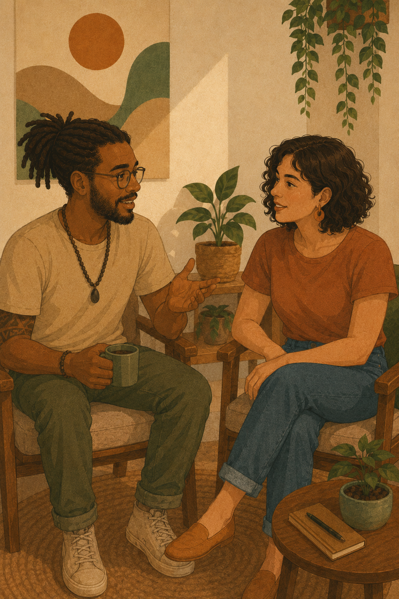
Muitas das ações do Brasil já se enquadram nessas práticas. As assembleias dos serviços, por exemplo, assim como as Associações de Usuários e familiares do seu território, alguns projetos de geração de trabalho e renda e certos grupos de família. É importante então que as pessoas da equipe de referência atuem como fortalecedores desses grupos e ações, agindo de maneira estruturada, e não só com ações pontuais, como forma de incentivar o pontapé inicial e a sustentação de uma rede de apoio desse tipo no território. A equipe pode escolher alguém que acompanhe as reuniões de um grupo, sempre pensando na autonomia de quem frequenta o grupo, ou que comece um encontro de famílias aos sábados com o intuito de que o grupo passe a funcionar pelas famílias, e assim por diante.
Como o serviço que você trabalha pode modificar as ações para sustentar grupos ou pessoas para apoio entre pares?
Quais as ações da miniequipe que incentivam as redes locais de apoio?
O pesquisador Eduardo Mourão de Vasconcelos está há muitos anos pensando esse campo da nossa Reforma Psiquiátrica. Tem artigos e manuais que podem ajudar na criação e no sustento de espaços como esse:
• Peer support mental health services
• Cartilha: ajuda e suporte mútuos em saúde mental
• Grupos de Ajuda Mútua para Família e Usuários
• Crise no CAPS AD III: da violência institucional à mobilização social
Agora, clique em cada ferramenta e arraste para dentro da caixa.
O movimento da Luta Antimanicomial e as Associações de Usuários
O Movimento Antimanicomial, ou Luta Antimanicomial, é um movimento social que luta pelos direitos das pessoas em sofrimento mental e advoga pelo fim da lógica manicomial em todos os âmbitos de nossa sociedade (científico, cultural e jurídico). No Brasil, o movimento impulsionou a reforma psiquiátrica e atua de maneira consistente na produção de normativas, leis, eventos, discussões científicas e políticas e outros tantos aspectos da vida. É composto de usuários e usuárias, trabalhadores, gestores, familiares e sociedade civil e abarca dentro deles diferentes grupos e visões sobre como desconstruir e acabar com os manicômios mentais ou físicos.
A participação social em coletivos e movimentos, além de tudo, é um excelente espaço de sociabilidade e cria um papel, ainda mais horizontal, entre usuários e trabalhadores: o papel de companheiros de militância. Quantas amizades e parcerias não foram feitas no fogo da atuação política?
Nesse âmbito, sugerimos você acessar os seguintes vídeos:
• Dia Nacional da Luta Antimanicomial
• Documentário: Pensamento, Alma e Coração (Luta Antimanicomial) – Caps Alvarenga
Você sabe quais grupos, coletivos, fóruns ou associações fazem o debate antimanicomial na sua cidade ou território? Que tal planejar uma visita com outros usuários e trabalhadores ou chamar para uma conversa na assembleia do serviço ou na comunidade?
Clubhouse’s: clubes de interesses
Os Clubhouse’s começaram em 1948, quando ex-pacientes de um hospital psiquiátrico de Nova York (EUA) começaram a se reunir informalmente, em um formato de “clube”, ou seja, pessoas com o mesmo interesse e de forma horizontal. Foram organizados como um sistema de apoio para pessoas que vivem com questões psicossociais, em vez de um serviço ou programa de tratamento. Comunidades ao redor do mundo se inspiraram na experiência e adotaram o termo Clubhouse, porque comunica claramente a mensagem de pertencimento e associação. Essa mensagem de inclusão está no cerne da maneira de trabalhar.
Um Clubhouse é um espaço de reabilitação psicossocial baseado na comunidade, voltado para pessoas com transtornos mentais graves e persistentes e que tem o objetivo comum de se apoiar. Não é um serviço clínico, mas sim um ambiente acolhedor, no qual os membros participam de atividades significativas, trabalham juntos e constroem uma rede de apoio.
O modelo é baseado em seis pilares principais:
1. Participação voluntária e livre de tempo: os membros participam enquanto
desejarem.
2. Trabalho significativo: os membros ajudam a administrar o próprio
Clubhouse, por meio de tarefas em diferentes áreas (cozinha, recepção,
tecnologia etc.).
3. Tomada de decisão compartilhada: tudo é decidido de forma democrática
entre membros e equipe.
4. Programas de emprego: com suporte individual para inserção e manutenção
no mercado de trabalho.
5. Apoio educacional e social: incentivo ao retorno aos estudos, moradia,
saúde e lazer.
6. Sentimento de pertencimento: promovendo autoestima, dignidade e inclusão
social.
Os relacionamentos significativos e de qualidade são o cerne dos Clubs. A relação entre membros e entre funcionários se desenvolve naturalmente à medida que trabalham lado a lado, realizando as tarefas diárias. Todos os funcionários têm funções generalistas e eles estão envolvidos em todas as atividades, incluindo as tarefas diárias de trabalho, os programas sociais e recreativos à noite, os programas de emprego, o alcance comunitário, a educação assistida e as responsabilidades de apoio comunitário. Membros e funcionários compartilham a responsabilidade pelo funcionamento do Club.
Estudos atuais mostram que a estratégia incide diretamente na diminuição da necessidade de internação.
Nesse âmbito, sugerimos você acessar os seguintes vídeos:
Suporte interpares como referências terapêuticas
Como seria um usuário assumir o papel de referência terapêutica de outro usuário? O suporte interpar como referência terapêutica é ainda uma prática mais consolidada em outras áreas da saúde pelo mundo, como nas políticas de IST, HIV/aids, câncer ou até no uso de substâncias psicoativas. Na saúde mental, ainda é um desafio pouco explorado, mas com excelentes experiências de usuários sendo contratados como oficineiros ou cuidadores de Serviços Residenciais Terapêuticos. Experiências exitosas, mas pontuais, e que muitas vezes ainda causam resistência nos profissionais.
Estudos têm mostrado, no entanto, que, após barreira inicial, o trabalho do suporte interpar supera expectativas e revela alta potencialidade em ações que desenvolvem autonomia e vinculação. Algumas entidades têm se debruçado sobre formações específicas para que os usuários possam desempenhar as suas funções de forma adequada em prol do recovery dos seus pares. Apontamentos recentes indicam que é preciso dar suporte ao apoio com ações institucionais claras para que as estratégias sejam efetivas.
Discuta na equipe em que você trabalha: o que é possível pensar no território em que você atua? O que precisa mudar para dar espaço a esse tipo de iniciativa?
Conheça o seguinte manual: Formação para prestadores de suporte interpares: manual do formador.
Acampadentro
Iniciativa do CAPS IJ Piração em São Paulo, reunia profissionais da unidade e cerca de 20 adolescentes para dormirem no serviço e participarem de diversas oficinas no período noturno, com início às 18h da sexta e término às 10h do sábado. Nesse período, eram desenvolvidas atividades cooperativas, de lazer e culturais, com o intuito de promover o encontro, a interação e o fortalecimento de vínculos entre esses usuários do serviço e alguns trabalhadores. A prática fez sucesso, cresceu e foi adotada em outros municípios e CAPS.
A proposta foi promover o protagonismo desses adolescentes com problemas graves de saúde mental, propiciando sensações que, por vezes, muitos não conseguem no dia a dia, como passar a noite fora de casa sem a família. Nesse contexto, tudo é construído coletivamente, desde as escolhas das atividades até a alimentação.
Conheça mais dessa iniciativa em https://prefeitura.sp.gov.br/web/saude/w/noticias/224600.
Acampadentro
Iniciativa do CAPS IJ Piração em São Paulo, reunia profissionais da unidade e cerca de 20 adolescentes para dormirem no serviço e participarem de diversas oficinas no período noturno, com início às 18h da sexta e término às 10h do sábado. Nesse período, eram desenvolvidas atividades cooperativas, de lazer e culturais, com o intuito de promover o encontro, a interação e o fortalecimento de vínculos entre esses usuários do serviço e alguns trabalhadores. A prática fez sucesso, cresceu e foi adotada em outros municípios e CAPS.
A proposta foi promover o protagonismo desses adolescentes com problemas graves de saúde mental, propiciando sensações que, por vezes, muitos não conseguem no dia a dia, como passar a noite fora de casa sem a família. Nesse contexto, tudo é construído coletivamente, desde as escolhas das atividades até a alimentação.
Conheça mais dessa iniciativa em https://prefeitura.sp.gov.br/web/saude/w/noticias/224600.
Estratégias com saberes e práticas tradicionais
Nos parece fundamental abordar algumas questões referentes ao cuidado à saúde mental de populações específicas, uma vez que estas carregam consigo uma diversidade de práticas diferentes daquelas a que estamos habituados no cotidiano dos serviços da RAPS. Trata-se de práticas forjadas através de gerações, com fortes articulações com os territórios e a dinâmica cultural das populações que ali viveram e vivem, exigindo que problemas com o corpo e a alma fossem manejados de acordo com suas visões de mundo, ou cosmovisões.
Nossa aposta é que pontes possam ser construídas entre as práticas da atenção psicossocial com esse grande universo de saberes ancestrais, dos quais temos muito a aprender, ainda que para orientar o acolhimento devido às características únicas das pessoas que eventualmente encontramos para produção do cuidado. E, a partir desse diálogo intercultural, construir estratégias potentes para o manejo à crise, congregando diferentes agentes para o apoio à pessoa acompanhada. Assim, apresentamos brevemente algumas questões importantes para nos acompanharem nessa caminhada.
Agora, clique em cada ferramenta e arraste para dentro da caixa.
As populações e a Política Nacional de Saúde Integral dos Campos, das Florestas e das Águas
Definir precisamente essas populações não é tarefa fácil. A diversidade dos modos de vida e a pluralidade de relações com o território que ocupam dificultam esse processo. Pessoa, Almeida e Carneiro (2018) assim colocam:
As PCFA são os povos e comunidades que têm seus modos de vida, produção e reprodução sociais relacionados predominantemente com o campo, a floresta, os ambientes aquáticos, a agropecuária e o extrativismo. Dentro desse grupo populacional, tem-se os camponeses, agricultores familiares, trabalhadores rurais assalariados e temporários que residam ou não no campo, trabalhadores rurais assentados e acampados, comunidades de quilombos, populações que habitam ou usam reservas extrativistas, populações ribeirinhas, populações atingidas por barragens, entre outras comunidades tradicionais (Pessoa; Almeida; Carneiro, 2018, p. 305).
A seguir, apresentamos uma lista em que se destacam povos e comunidades tradicionais reconhecidos no Brasil (Fiocruz, 2018), caracterizando-os de acordo com suas relações com o território. Clique nos termos para conhecer suas definições:
Mulheres que coletam e se beneficiam das sementes da andiroba, uma árvore da Amazônia, para produzir óleo medicinal e cosmético.
Comunidades que vivem na Serra do Espinhaço, em Minas Gerais e Bahia, que colhem as flores sempre-vivas, usadas na confecção de artesanato e arranjos florais.
Povos que habitam a região semiárida do Nordeste e que desenvolvem atividades como agricultura familiar, criação de animais, extrativismo vegetal e artesanato.
Comunidades litorâneas que vivem no Sudeste e Sul do Brasil, que praticam a pesca artesanal, a agricultura de subsistência e o manejo da mata atlântica.
Mulheres que coletam e se beneficiam das castanhas-do-pará, uma das principais fontes de renda e alimento das populações da Amazônia.
Comunidades que vivem nas áreas de ocorrência da mangabeira, uma árvore frutífera típica do Cerrado, da Caatinga e da Mata Atlântica, e que dependem da coleta e do processamento da mangaba para sua sobrevivência.
Povos de origem indiana, europeia e africana que se caracterizam pela mobilidade territorial, pela diversidade cultural e pela resistência à discriminação.
Comunidades que vivem na Chapada Diamantina, na Bahia, e que extraem e trançam os cipós, uma fibra vegetal usada na produção de artesanato e utensílios domésticos.
Povos vivendo em diferentes biomas do Brasil e que exploram os recursos naturais de forma sustentável, como frutos, sementes, óleos, fibras, látex, mel, entre outros.
Comunidades que vivem no Paraná e que praticam um sistema agroflorestal coletivo, baseado na criação de animais soltos nos faxinais, áreas de mata comunitária.
Comunidades que vivem no semiárido baiano e que praticam um sistema de criação de animais em áreas de pastagem comum, respeitando os ciclos naturais e a biodiversidade.
Povos que vivem no norte de Minas Gerais, em uma região de transição entre o Cerrado e a Caatinga, chamada gerais, que desenvolvem atividades como agricultura, pecuária, extrativismo e artesanato.
Comunidades vivendo em ilhas fluviais e costeiras do Brasil e que mantêm uma relação de identidade e pertencimento com esses territórios, onde realizam atividades como pesca, agricultura, extrativismo e turismo.
Povos originários do Brasil, que têm uma grande diversidade de línguas, culturas, organizações sociais e formas de relação com a natureza.
Comunidades que vivem no litoral do Piauí e que praticam a pesca artesanal usando iscas vivas, chamadas iscas, capturadas nos manguezais.
Comunidades que vivem no Morro do Querosene, em São Paulo, e que preservam as tradições culturais e religiosas de matriz africana, como o candomblé, a capoeira, o samba e o jongo.
Povos que vivem no Pantanal, um dos maiores ecossistemas do mundo, e que desenvolvem atividades como pecuária, pesca, turismo e artesanato.
Comunidades vivendo em diferentes regiões do Brasil e que praticam a pesca como meio de vida, usando técnicas, saberes e instrumentos tradicionais.
Comunidades que vivem na região da Costa do Dendê, na Bahia, e que extraem e se beneficiam das fibras da piaçava, uma palmeira usada na fabricação de vassouras, escovas, chapéus e outros produtos.
Comunidades de origem alemã que vivem no Espírito Santo e em outros estados do Brasil, que mantêm a língua, a religião, a culinária, a música e o artesanato de seus antepassados.
Comunidades que professam religiões de matriz africana, como o candomblé, a umbanda, o tambor de mina, entre outras, e que têm nos terreiros, espaços sagrados de culto, seus territórios de identidade e resistência.
Mulheres que vivem na região do babaçual, que abrange os estados do Maranhão, Piauí, Tocantins e Pará, que coletam e quebram os cocos do babaçu, uma palmeira que fornece alimento, óleo, carvão, artesanato e outros produtos.
Comunidades descendentes de africanos escravizados que se rebelaram ou fugiram do cativeiro e formaram seus próprios territórios, chamados quilombos, onde mantêm suas tradições culturais, religiosas e econômicas.
Comunidades que vivem no Araguaia, um dos principais rios do Brasil, e que praticam a pesca, a agricultura e a criação de animais, adaptando-se às variações do nível da água ao longo do ano.
Comunidades vivendo às margens dos rios da Amazônia, dependentes da pesca, da agricultura, do extrativismo e do transporte fluvial para sua sobrevivência.
Comunidades vivendo na Amazônia, que extraem o látex das seringueiras, uma árvore nativa da região, para produzir borracha e outros derivados.
Comunidades que vivem no vale do rio São Francisco, em Minas Gerais, e que praticam a agricultura nas vazantes, áreas que ficam expostas após a baixa do nível do rio.
Comunidades que vivem no sudoeste de Goiás e que praticam um sistema agropecuário baseado na preservação das veredas, áreas úmidas do Cerrado que abrigam nascentes de água e uma rica biodiversidade.
Profissionais extrativistas da Amazônia que coletam o açaí, utilizando a “peconha”, tipo de corda ou cipó amarrado aos pés para subir na árvore de açaí. Estão presentes nas plantações de açaí do estado do Pará.
População que vive no “torrão” no período da seca, nas margens dos rios no estado de Tocantins. No período da cheia, deslocam-se para as áreas urbanas.
Singularidades e diversidades também se manifestam nas condições de saúde dessas populações, ainda que algumas demandas sejam comuns. Altos índices de pobreza e analfabetismo, acesso à educação, ao transporte público, a saneamento básico e saúde. Maior exposição às mudanças climáticas, à mortalidade infantil e a violências em geral, com especial destaque para violências de gênero. O acesso a ações e serviços de saúde mental também é difícil, pois, em geral, os dispositivos da RAPS inseridos nos territórios apresentam fragilidades que dificultam sua implementação. Serviços de média e alta complexidade estão localizados nos centros urbanos, implicando dificuldades em realizar os acompanhamentos devidos.
Outro fenômeno observado é o êxodo rural, especialmente de jovens mulheres, o que vem levado ao envelhecimento e à masculinização da população rural. Pessoa, Almeida e Carneiro (2018) sustentam que:
Nas áreas rurais, a população jovem reduziu 6 milhões em 20 anos, a população adulta estagnou e a população idosa cresceu em pouco mais de 1 milhão. A razão entre os idosos com 65 anos ou mais e a população jovem com 17 anos ou menos, chamado de índice de envelhecimento, passou de 9,7% em 1991 para 21,4% em 2010 na população rural (Pessoa; Almeida; Carneiro, 2018, p. 307).
Após longa trajetória de mobilizações sociais, indagações e articulações políticas, o Ministério da Saúde, por meio da Portaria nº 2.866, de 2 de dezembro de 2011, instituiu a Política Nacional de Saúde Integral das Populações do Campo e da Floresta. O objetivo principal fora a melhoria do nível de saúde dessas populações, mediante ações, projetos e programas que considerem as especificidades relativas às relações com o território, os atravessamentos de raça/etnia, orientação sexual e identidade de gênero, as relações de produção, trabalho, emprego e geração de renda, entre outros (Brasil, 2013).
Assim, o instrumento normativo representa um avanço para a superação de dificuldades históricas no contexto da promoção da saúde e prevenção do adoecimento dessas populações. O acesso a esses recursos talvez seja o problema mais evidente: algumas comunidades não têm cobertura adequada pelos serviços da Atenção Primária à Saúde (APS), bem como resolutividade de suas demandas. Em 2014, após solicitação de representantes das populações ribeirinhas e trabalhadores e trabalhadoras das águas, foram incluídas na política estas populações, quando passou a ser denominada Política Nacional de Saúde Integral das Populações dos Campos, das Florestas e das Águas (PNSIPCFA), expressando o compromisso do Estado brasileiro na garantia dos direitos à saúde dessas populações (Fiocruz, 2018).
O corpo-território e algumas implicações para a saúde mental
Muitas são as perspectivas possíveis para analisar as relações entre corpo e território (Haesbaert, 2021). A que nos interessa para a discussão sobre saúde mental e populações dos Campos, das Florestas e das Águas implica uma compreensão mais ampla sobre o corpo individual e suas trocas com as delimitações geográficas, como pensadas tradicionalmente. Trata-se de instigar outro modo de concepção das subjetividades e dos territórios onde atuamos, abandonando a oposição entre sujeito e ambiente, seres humanos e não humanos, mundo físico e mundo espiritual, passado e presente, entre outros.
Coradin e Oliveira (2024) nos apresentam algumas características do conceito e suas relações com a saúde de mulheres de povos originários:
O território constitui o organismo físico, psicoemocional, mental e espiritual das mulheres, assim como as florestas, a fauna e a flora e as águas são mantidas pelos seus corpos. Ambos, corpo e território, vivem em profunda relação de codependência ecológica. [...] Compreender essa inter-relação nos auxilia a entender as motivações que as mulheres das florestas, dos campos e das águas acionam para construir a sua saúde, desde seus coletivos comunitários e territórios de vida (Coradin; Oliveira, 2024, p. 3).
Certas formas de pensar as subjetividades que se constroem nessas populações estabelecem extensões e continuidades, compreendendo o sujeito implicado com os elementos que compõem o seu território, não sendo possível distinções entre estes. É claro que o sujeito também é seu corpo físico, com suas singularidades e características específicas, mas não se limita a isso. A subjetividade também pode integrar o rio, a mata e o canto dos pássaros. Uma árvore, suas cascas e frutas podem ser compreendidas como antepassados. O chá de ervas é por vezes um professor. Espiritualidades que protegem, acolhem e produzem cuidados em saúde das pessoas.
De modo geral, são subjetividades compostas de elementos do próprio corpo do sujeito, da sua família, da sua cultura, de suas tradições, da sua ancestralidade e relações com o passado e dos elementos físicos e não físicos da natureza. A essa forma de compreender a subjetividade chamamos de corpo-território.
Tal cosmovisão nos impõe a construção de novas formas de fazer e pensar sobre saúde. Em primeiro lugar, precisamos lembrar que tais populações não são chamadas de povos originários à toa: existem práticas milenares de cuidados múltiplos, frente a diversos contextos e demandas, cujas vastas experiências ao longo do tempo, nas relações entre si e com o território, lhes foram impostas. É preciso o reconhecimento desses saberes e práticas tradicionais voltadas para o cuidado nos territórios. Suas histórias, os modos de compreensão sobre saúde-doença que estabelecem, os atores e atrizes que operam mais especificamente estes. Não há acolhimento e formação de vínculo sem diálogo horizontal com essas práticas.
Em segundo lugar, compreender que a noção de corpo-território conflita com as divisões, os recortes e as especializações excessivas das ciências humanas e da saúde, que separaram por décadas o sujeito em várias áreas específicas do conhecimento: imunologia, cardiologia, psiquiatria etc. Isso quer dizer que, em certas populações, não existem diferenças claras entre o que é “mental” ou, mais especificamente, o que se configura como “crise em saúde mental”. Para o cuidado do Nhemyró, por exemplo, é possível que, entre outras práticas, sejam realizados jejuns ou restrições alimentares – práticas diferentes das nossas abordagens frente ao suicídio. Cabe a nós o exercício constante de busca por essas compreensões. Em geral, o conceito de bem viver nos oferece pistas importantes.
Por fim, o corpo-território obriga-nos a pensar que cada violação aos corpos são agressões aos territórios. A vulnerabilidade do corpo produz fragilidades no território. Da mesma forma, o ataque aos territórios, o enfraquecimento da qualidade de vida nestes – como o avanço do garimpo, das queimadas, do desmatamento, da contaminação dos rios, do uso de agrotóxicos e tantos outros – é a produção de vários processos de desterritorializações, de adoecimentos e de mortes. Assim, cuidar da saúde mental também é lutar e defender os territórios. Aqui, os conceitos de crise ambiental e crise em saúde mental precisam se entrelaçar.
É o que nos ensinam as mulheres indígenas por intermédio do manifesto publicado durante a I Marcha de Mulheres Indígenas, em 2019:
Queremos respeitado o nosso modo diferenciado de ver, de sentir, de ser e de viver o território. Saibam que, para nós, a perda do território é falta de afeto, trazendo tristeza profunda, atingindo nosso espírito. O sentimento da violação do território é como o de uma mãe que perde seu filho. É desperdício de vida. É perda do respeito e da cultura, é uma desonra aos nossos ancestrais, que foram responsáveis pela criação de tudo. É desrespeito aos que morreram pela terra. É a perda do sagrado e do sentido da vida (I Marcha das Mulheres Indígenas, 2019, p. 341-342).
Frente a essas considerações, cabem algumas reflexões sobre o que chamamos de diálogo intercultural, ou seja, o diálogo entre as práticas de cuidados das populações dos Campos, Florestas e Águas e as práticas de cuidado que nós, profissionais de saúde que integram a Rede de Atenção Psicossocial (RAPS), operamos. Não devemos estabelecer oposições entre estas, no sentido de pensar que uma deve se sobrepor à outra. É possível construir estratégias de coexistência, de complementariedades e lembrar que concepções diferentes, práticas e metodologias diferentes produzirão efeitos diferentes.
Ailton Krenak, em conversa com Pedro Bial, apresenta-nos as relações que o povo Krenak exerce com o seu território. Assista em: https://www.youtube.com/watch?v=ZHk_1iwt0gs.
Pistas para o diálogo intercultural
Ofereça ao território sua compreensão sobre saúde mental, adoecimento e cuidado. A maneira como maneja certas situações, especificando as práticas utilizadas e os efeitos que elas podem produzir para lidar com as demandas. Da mesma forma, busque compreender como os saberes tradicionais entendem esses fenômenos. Quais as origens deles? Que tipo de práticas são indicadas? Por que estas e não outras? Como elas funcionam? Quais são os limites delas?
Apresentamos como exemplo a experiência no município de Alvarães (AM), onde as parteiras tradicionais do território – historicamente excluídas do sistema de saúde oficial – passaram a integrar a rede de assistência ao parto. Para tanto, diversos encontros foram estabelecidos, com trocas intensas de saberes. Nesse processo, várias resistências se fizeram presentes, mas foram devidamente mediadas.
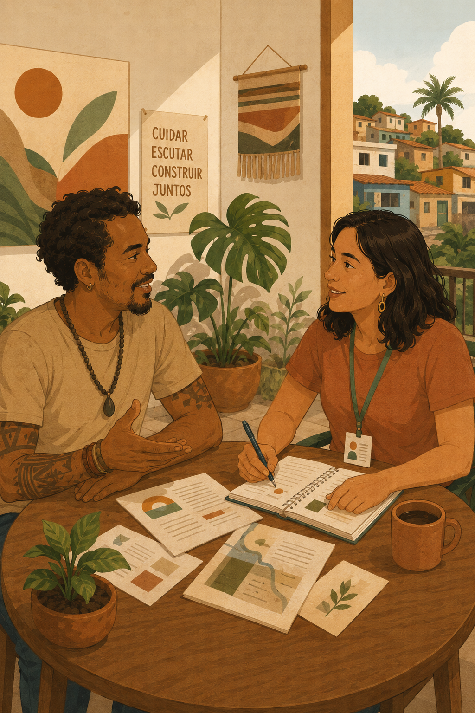
Como efeitos desse processo, podemos destacar a ampliação do conhecimento de todos os presentes sobre o pré-natal, o parto e o puerpério; a quebra de estigmas quanto aos saberes tradicionais; a aproximação entre as parteiras e as Agentes Comunitárias de Saúde (ACS), com a realização de visitas e encaminhamentos mútuos; o financiamento de materiais e insumos para a realização dos partos (“kit das parteiras”) por parte da gestão; e, finalmente, rompendo uma lógica de exclusão dessas importantes referências do cuidado tradicional no espaço hospitalar, puderam aderir a estas instituições.
Com a implantação do programa do parto humanizado no município de Alvarães, as Parteiras Tradicionais passaram a participar de todo processo de ingresso da gestante na unidade hospitalar, e da realização do parto. Esse acompanhamento era sempre uma demanda das parteiras, e passou a contar com a permissão da direção do hospital. Assim, além de auxiliar nos partos, as parteiras cuidam das puérperas no pós-parto no hospital, especialmente, quando a gestante não tinha uma pessoa da família para acompanhá-la (Arias et al., 2020, p. 104).
A aproximação com as parteiras e o acolhimento destas no ambiente hospitalar também produziram mudanças na organização desse ambiente. O hospital foi assumindo características mais domésticas, contrastando com o ambiente asséptico tradicional. Da mesma forma, a iluminação dos ambientes fora repensada, com a diminuição da quantidade de luz. Pequenos exemplos que garantiram mais tranquilidade e acolhimento para gestantes, familiares e equipe.
A problemática do suicídio entre os povos originários também pode nos trazer reflexões importantes sobre a construção dos diálogos interculturais e de estratégias para prevenção e manejo. Temos observado que a violência do processo colonial, as violências interétnicas, os contextos de vulnerabilidades sociais a que as comunidades e os territórios foram submetidos e o uso abusivo de álcool e outras drogas são fatores que podem intensificar os sofrimentos psíquicos e espirituais dessas comunidades. A pandemia da covid-19 também impactou o bem viver dos povos indígenas, interferindo nas relações comunitárias, no sofrimento frente a incertezas, no aumento do número de mortes e perdas, no medo em sair das aldeias e na impossibilidade de realizar ritos funerários (Kabad et al., 2021). Nesses contextos, os índices de suicídio entre os povos indígenas brasileiros têm trazido muita preocupação. O que fazer?
Novamente, é preciso lembrar que comunidades diferentes enxergam o mundo de formas diferentes. Para os Suruwaha, por exemplo, a morte autoinfligida por meio do consumo do timbó não é vista como suicídio, mas como morte ritual por autoenvenenamento. Isto é, um fenômeno vinculado a suas práticas ancestrais e não à perspectiva de vulnerabilidade emocional/crise em saúde mental.
Estudos com o povo Iny apontam que o suicídio também está vinculado à ausência dos jovens indígenas nos rituais que fazem parte da ancestralidade da comunidade, deixando-os mais vulneráveis. Souza (2016, p. 153), em estudo sobre o suicídio com comunidades do Alto Rio Negro, relatou que a transição da infância para a adultez sem os rituais de passagem coloca o jovem indígena em situação difícil:
O jovem indígena contemporâneo, na ausência dos rituais de iniciação, tem um status social ambíguo, e por vezes é representado como adulto, por vezes como criança. Sentindo-se adulto e sendo tratado de uma forma imprópria até mesmo se fosse criança, a insatisfação parece inevitável. O desconforto não estaria relacionado somente ao que lhe é explicitamente ordenado, nem àquilo que lhe é imposto, mas ao próprio negar de seu status de pessoa plena (Souza, 2016, p. 153).
Para os Guarani-Kaiowá, existem duas questões emocionais importantes a serem consideradas ao pensar no suicídio: o nhemo’y’rõ e o taruju. O primeiro é concebido como “profunda mágoa ou sofrimento intenso com pena” (Souza, 2016, p. 143). O segundo, como “doentia paixão ou dor de romper o coração”. A influência destes sobre o sujeito leva a um estado de desespero e de perda de vontade de viver.
Algumas estratégias que já foram postas em prática nos trazem algumas pistas, como o acolhimento da pessoa que tentou o suicídio, bem como de seus familiares e da comunidade; a mobilização das lideranças comunitárias e das pessoas de referência na medicina indígena de cada população para implementação de suas práticas socioculturais e espirituais; o fortalecimento de redes de apoio dentro do território, construindo dinâmicas de acompanhamento e cuidados múltiplos. Ademais, identificar quais fatores de proteção e autocuidado operam dentro dos territórios, fortalecendo-os e dialogando com eles e, se possível, integrando-os aos projetos terapêuticos singulares construídos com as equipes de saúde. Adiante, vejamos algumas questões que podem facilitar a construção de estratégias coletivas para lidar com as demandas do suicídio em comunidades indígenas e povos tradicionais (Kabad et al., 2021).
Como a comunidade e o povo com a qual você trabalha explica o fenômeno do suicídio? Existe algum nome na língua indígena para defini-lo?
De acordo com a comunidade, quais são as emoções e os comportamentos que podem indicar que uma pessoa pode tentar tirar sua própria vida?
Quais são os fatores de risco identificados pelas comunidades e pelas lideranças que podem incrementar o fenômeno de suicídio na aldeia?
Quais as medidas que a comunidade acredita serem necessárias para neutralizar os fatores de risco e proteger os segmentos da população mais vulneráveis?
Quem são as lideranças e os especialistas das medicinas tradicionais indígenas que podem ser mobilizados para a construção de estratégias de proteção às aldeias frente ao fenômeno do suicídio?
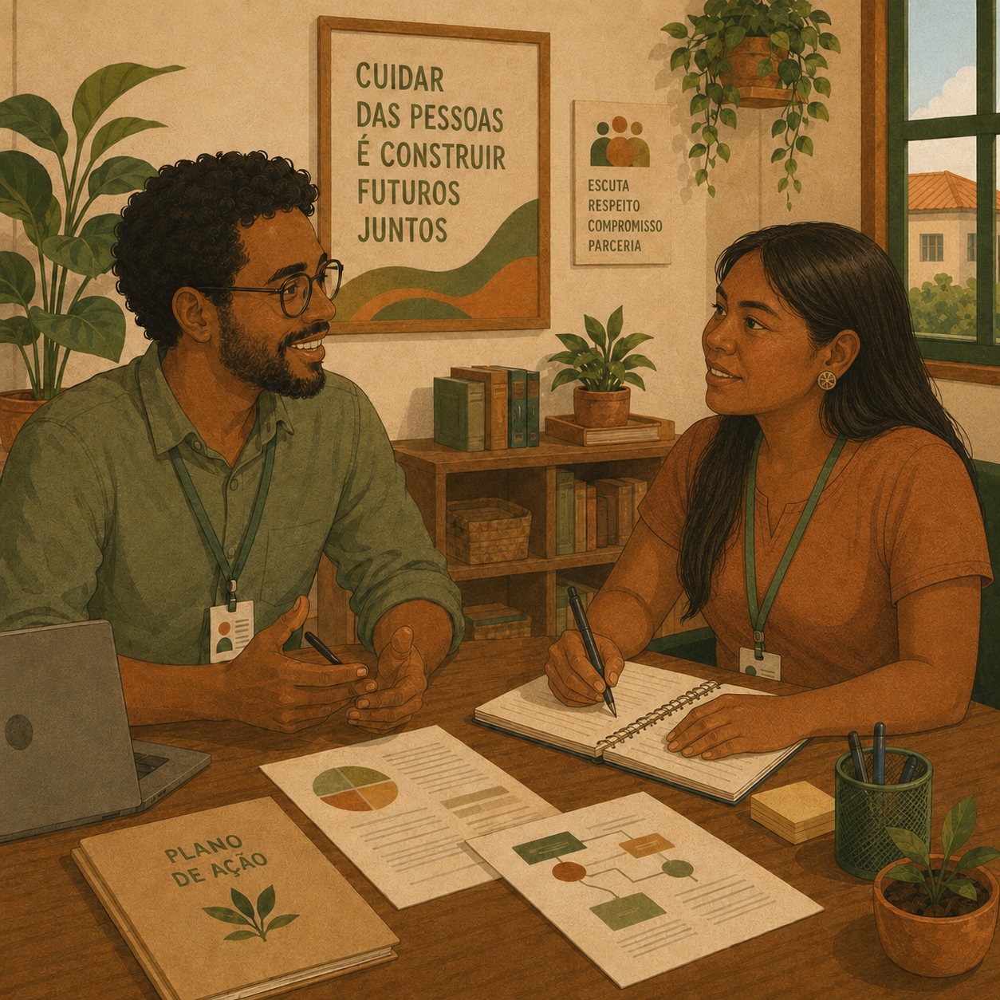
Pastore (2016) apresenta alguns desafios colocados para o diálogo intercultural com o território Kaxixó. A partir do trabalho conjunto com a comunidade indígena, destacou três demandas apresentadas, em que intervenções foram possíveis (psicológicas, em especial): o histórico de sofrimento psíquico, o luto em função das perdas frequentes e a existência de conflitos na própria comunidade. Inicialmente, as estratégias construídas perpassaram pela construção de uma equipe interétnica, responsável pela construção da horizontalidade dos saberes e processos comunicativos, criando linguagem comum a todos.
O acolhimento, a escuta e a vivência do luto das lideranças e das pessoas mais velhas da comunidade foram ferramentas fundamentais para a produção do cuidado e a luta pelo território.
Desde a década de 80, as lideranças antigas precursoras da luta pelo reconhecimento enquanto povo indígena e por suas terras faleceram e seus herdeiros manifestam forte sentimento de orfandade, porém continuam firmes nas lutas. O trabalho do profissional de psicologia proporcionou o empoderamento dessas novas lideranças e as lembranças puderam ser transformadas em legados. Dar voz aos mortos fortalece os novos em suas ações e potencializa o desenvolvimento do Povo Kaxixó enquanto comunidade indígena nas diferentes frentes de atuação: cultural, ambiental e econômica (Pastore, 2016, p. 210-211).
Para se aprofundar na relação entre corpo-território e saúde, sugerimos você assistir ao vídeo Amazônia sem Garimpo, em que se destacam o avanço do garimpo e os efeitos do uso predatório dos recursos naturais na saúde dos indígenas Yanomami.
Bem viver e saúde mental
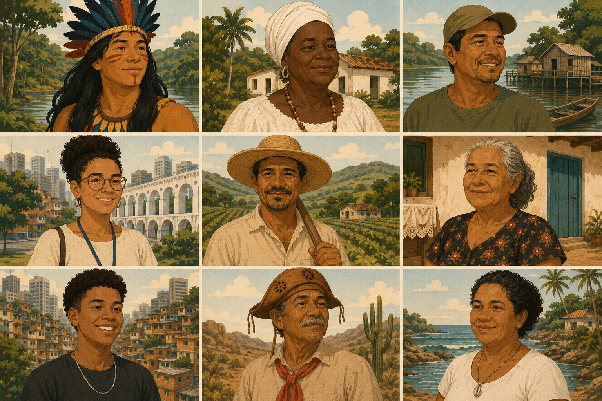
O diálogo sobre saúde mental com os povos dos Campos, das Florestas e das Águas – indígenas, quilombolas, ribeirinhos, entre outros – exige de nós, profissionais interessados em produzir cuidados dignos, deslocamentos quanto às concepções que nos conformaram enquanto especialistas diversos. Essas mudanças advêm não somente do combate às posturas colonialistas, reducionistas e manicomiais, mas também dos efeitos teóricos e práticos que disparam.
Acontece que, diferentemente das concepções sobre corpo, mente, sujeito, ambiente, saúde mental, doença e tratamentos, tais populações concebem o ser humano para além das dicotomias advindas do modelo biomédico, que pressupõe a possibilidade de separação dos diversos processos que conformam a subjetividade humana. Longe de buscar uma teoria única sobre essas subjetividades, cabe pensar que a “pessoa” não pode ser isolada do coletivo, dos elementos naturais dos territórios, dos saberes e práticas ancestrais, das vivências psicoespirituais e tantas outras manifestações coletivas que se atualizam, dialogam e se reestruturam no cotidiano. A convivência harmoniosa com o território, seus diversos elementos, o respeito mútuo, o cuidado com os recursos naturais, as relações com o sagrado têm sido conceituados como “bem viver” (Teixeira, 2016).
Tal compreensão é um passo importante para a construção de diálogos interculturais, haja vista que, a partir desses diversos aspectos do cuidado, devem ser reorganizados. A própria concepção de saúde indígena, adotada pela Política Nacional de Atenção à Saúde dos Povos Indígenas, reafirma as relações vida a vida, harmonia entre pessoas, famílias, comunidades, espiritualidade e seres do ambiente com a saúde e o processo de cura específica de cada povo indígena (Brasil, 2002).
Assim, também o cuidado em saúde mental e o manejo das crises devem ser encarados sob essa perspectiva: as equipes psicossociais devem construir relações de familiaridade com os saberes e práticas dos territórios acompanhados, construindo alternativas de interesse das pessoas no que se refere à superação dos sofrimentos psíquicos. Nesse sentido, outro importante documento de referência para construção desses diálogos é a Portaria nº 2.759, de 25 de outubro de 2007, que institui as Diretrizes para a Política Integral à Saúde Mental das Populações Indígenas.
Seu primeiro artigo é dedicado para reforçar a importância dos saberes e práticas de cuidado construídos pelas diversas populações para identificar problemas, construir soluções e manejar as questões que atravessam a saúde mental. Também se dedica a garantir a construção coletiva de consensos e estratégias de intervenção, com especial ênfase para a participação ativa dos diversos atores dos territórios, movimentos sociais e lideranças indígenas, respeitando e convocando a medicina tradicional indígena na elaboração de alternativas para o cuidado. Seu V item é especialmente importante aqui, por provocar o ponto central da Rede de Atenção Psicossocial (RAPS):
V - garantir acessibilidade, sobretudo através da potencialização das ações de construção coletiva de soluções para os problemas de saúde mental no nível da atenção básica, e da potencialização dos CAPS na construção coletiva de ações em seu território, sobretudo em regiões com grande concentração de comunidades indígenas (Brasil, 2007).
Quem são esses atores? Que práticas são essas? Em geral, as populações dos territórios dos Campos, das Florestas e das Águas apresentam uma grande diversidade de atores e atrizes que operam o cuidado em saúde e o bem viver. São eles: pajés, pais/mães de santo, benzedeiras, rezadeiras, curandeiros, garrafeiras, erveiras, puxadores, parteiras etc. As práticas de cuidado também são diversas, podendo dispor de rezas, chás, banhos, danças, tocar instrumentos musicais, cantar, ouvir músicas e cantos, dietas, jejuns, rituais sagrados, partos, rituais fúnebres, festividades, entre outras. Cabe a nós, equipes de saúde mental, construir relações potentes com eles. Como integrar essas práticas ao cuidado da pessoa em crise? Eis o desafio.
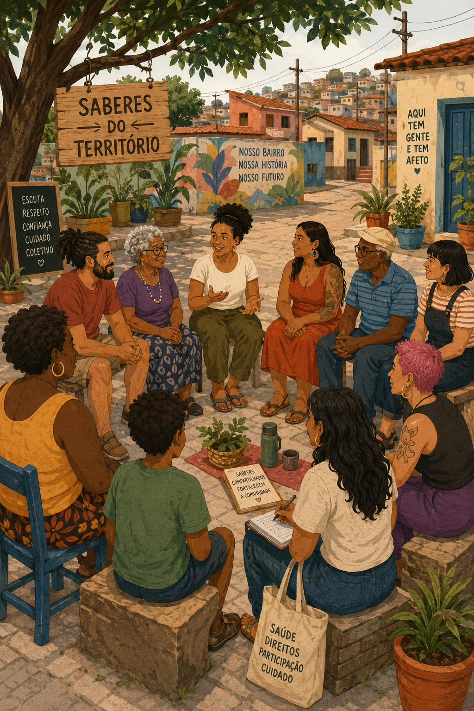
O próprio conceito de “crise” em saúde mental também merece atenção. Ele também pode assumir novos contornos, novos significados e novas estratégias de cuidado. Edinaldo Rodrigues (2016), indígena do povo Xukuru do Ororubá e psicólogo, convoca-nos a refletir sobre outro processo de vulnerabilização psicossocial implicado na emergência de situações de crise. Ele diz:
Porém, é importante ressaltar que parte das crises de saúde mental está relacionada à perda de vínculos culturais, tanto nas sociedades indígenas quanto na sociedade em geral. Ao iniciar este diálogo destaquei a importância da identidade e me foquei na perda de vínculos diretamente relacionada com o processo de adoecimento mental dos povos indígenas. De modo geral é o que se percebe no aumento da ansiedade; o vazio que antes não tinha lugar na mente das pessoas agora passa a desencadear tanto transtornos quanto dependência de drogas (Rodrigues, 2016, p. 233).
Crise socioambiental que fragiliza os territórios das populações, diminuindo substancialmente a qualidade de vida das pessoas e comunidades. As violências contra os povos quilombolas, ribeirinhos e indígenas, o avanço do garimpo ilegal e da exploração criminosa dos recursos naturais, a contaminação das nascentes e dos rios, as queimadas e as invasões de terras, entre diversos outros processos, obriga essas populações ao deslocamento compulsório, rompendo vínculos fundamentais para o exercício do bem viver, o contato com a terra e a vivência da cultura. A migração também os coloca em face de outros modos de vida alheios, estranhos para si. Sem acesso à renda, sem respeito às identidades, vão sendo expostos à exclusão social e a consequentes vulnerabilidades e riscos emocionais.
Entre os fenômenos que incrementam a vulnerabilidade socioeconômica e sanitária dos povos indígenas contemporâneos, estão os agravos situados no campo da saúde psicossocial e espiritual dos povos indígenas, tais como as violências em suas múltiplas manifestações, os problemas decorrentes do uso abusivo de álcool e outras drogas e a morte autoinfligida (suicídio) (Pereira; Ferreira; Lacerda, 2021, p. 25).
Novo imperativo para o manejo da crise: a retomada das práticas advindas dos territórios, o fortalecimento de vínculos com as comunidades, o acesso aos cuidados tradicionais que conformaram (e confortaram) a subjetividade e a saúde dessas populações. Cuidar da crise é também cuidar das florestas, das águas e dos campos. É cuidar das diversidades dos modos de viver resistentes no Brasil.
Quando as condições objetivas do modo de vida tradicional não estão garantidas, como é o caso da maioria dos indígenas brasileiros, rompe-se com a possibilidade do bem viver e prevalece o sofrimento: aparecem sintomas de depressão, ansiedade, uso prejudicial de álcool e outras substâncias, impulso ao suicídio (Teixeira, 2016, p. 243).
Nesse âmbito, sugerimos você acessar os seguintes links:
Estratégias antecipatórias: diretivas antecipadas (DA)
As estratégias indiretas de apoio à crise em saúde mental também podem dispor de planejamentos antecipatórios para diversas situações difíceis envolvendo a si e terceiros e contextos diversos, como situações de perda de consciência, crise e morte. Esse planejamento prévio possibilita ao sujeito a comunicação clara dos seus desejos e preferências em momentos nos quais a capacidade de expressá-los pode estar comprometida. São estratégias que devem orientar as ações de pares, familiares e profissionais de referência quanto ao cuidado dispensado ao usuário.
Entendemos como diretivas antecipadas um conjunto de orientações e preferências que devem orientar as relações com a pessoa em contextos de crise ou outras situações difíceis. Em geral, são construídas a partir de encontros individuais, familiares ou coletivos, em que diversos cenários são considerados. A proposta é diminuir o impacto negativo que essas experiências podem promover na qualidade de vida de pessoas com transtornos mentais e sua rede de apoio.
Escute o áudio a seguir para reconhecer as diretivas antecipadas em saúde mental. Acesse a transcrição aqui.
Em geral, a partir do diálogo horizontal com a pessoa acompanhada, um documento é produzido e integrado aos registros dela nos serviços. Cabe às equipes o apoio necessário para a produção e organização desse documento, ainda que a pessoa apresente dificuldades na escrita, na organização clara da fala e outras condições que dificultem o processo. O respeito às diretrizes é fundamental para o fortalecimento dos vínculos dos usuários com as pessoas implicadas no cuidado. Mas o que pode conter nesses planos?
Agora, clique em cada ferramenta e arraste para dentro da caixa.
Pessoas de referência
Ainda que algumas pessoas se sintam confiantes de que suas vontades e preferências no cuidado serão respeitadas por pessoas próximas – cônjuges, mães, filhos etc. –, a nomeação dessa pessoa de referência se faz importante, tanto para comunicação clara do modo como conduzir as situações enfrentadas quanto do ponto de vista legal, afinal, em alguns casos, a tutela pode ser concedida temporariamente a terceiros. É o caso, por exemplo, no Brasil, das interdições judiciais e das internações involuntárias (art. 6º, item II, da Lei nº 10.216/2001). Aqui residem alguns riscos importantes a serem destacados.
Retomemos brevemente a necessidade da garantia de diálogos constantes, abertos e acolhedores para os desejos da pessoa com transtorno mental. A pessoa/equipe de referência não deve ter como propósito silenciar ou substituir o outro, tornando-o alheio à sua própria diretiva. Devemos lembrar que, especialmente em situações de maior vulnerabilidade, nosso objetivo é a construção de diálogos que possibilitem a formação de vínculos e sentidos.
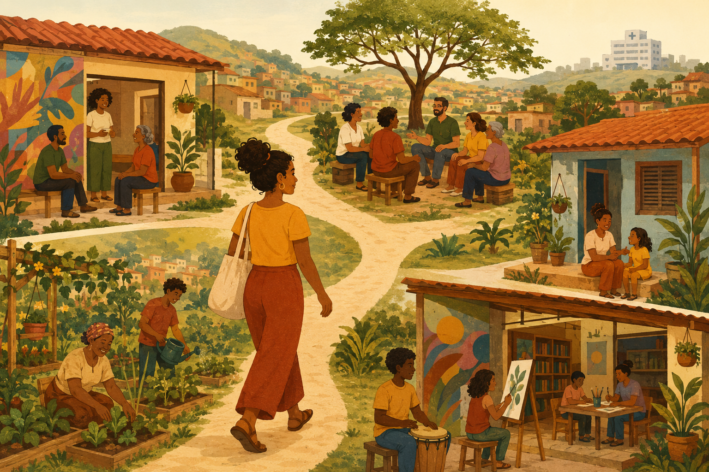
Quanto às internações involuntárias e/ou compulsórias, a própria lei da Reforma Psiquiátrica brasileira estabelece que essas medidas só podem ser implementadas quando todas as outras estratégias de cuidado, que não envolvam internações, tenham se mostrado insuficientes. O uso indiscriminado dessas práticas vem sendo criticado por impor aos sujeitos condições asilares/manicomiais, não devendo serem naturalizadas (Conselho Federal de Psicologia, 2018). Sobre esse ponto também vale revisitar os itens “Tomada de decisão apoiada no cotidiano das decisões de saúde e como dispositivo jurídico: nada sobre mim sem mim” e “Os pedidos judiciais” deste texto.
Assim, à pessoa de referência atribuímos a capacidade de manter o vínculo, a comunicação e o respeito às diretivas em contextos diversos, bem como a perspectiva de que o cuidado em saúde mental não deve priorizar medidas de internação de qualquer natureza, devendo estas serem pensadas como subsidiárias, temporárias, e que não violem os direitos da pessoa com transtorno mental. Tais questões precisam ser discutidas durante todo o processo da construção de diretivas antecipadas.
Orientações para o cuidado
Especificar a forma que a pessoa em questão quer ser cuidada em situações específicas, definindo terapêuticas de preferência, medicações, instituições, equipes e outras questões referentes ao apoio psicossocial para com a pessoa. Também podem ser inseridas informações quanto aos procedimentos que não devem ser utilizados. Outras questões de saúde podem fazer parte desse planejamento, como problemas de saúde, alergias, medicações de uso contínuo, entre outros.
Orientações diversas
Outras questões da vida da pessoa também precisam ser incluídas nesse processo, como cuidados com a casa, com filhos e outras pessoas pelas quais é responsável, orientações jurídicas, questões financeiras e trabalho, por exemplo. A ideia é refletir sobre como a dificuldade em realizar as atividades cotidianas pode impactar na pessoa e em sua rede de apoio e, a partir disso, estabelecer diretrizes que possam minimizar esses efeitos.
É importante que essas diretrizes sejam as mais claras e específicas possíveis, com vistas a diminuir a possibilidade de dúvidas ou interpretações equivocadas. Cabe destacar que as diretivas antecipadas podem ser reconstruídas de acordo com a vontade do sujeito, haja vista a possibilidade de identificar novas questões ou mudar suas preferências. Também são importantes para os profissionais de saúde que ofertam o cuidado, pois oferecem informações que serão fundamentais para as tomadas de decisão.
Cartão de crise
O cartão de crise também tem se mostrado como importante ferramenta para reduzir situações violentas, constrangedoras e ineficazes no acompanhamento de momentos de maior vulnerabilidade em saúde mental. Advinda da reforma psiquiátrica, é entendida como uma das diretivas antecipadas psiquiátricas (DAP), na qual estratégias para lidar com possíveis cenários são desenhadas antes da ocorrência destes. Geralmente, são pessoas com experiências prévias de crise em saúde mental e que, por terem vivenciado ações diversas, sinalizam o que compreendem como as melhores formas de serem cuidadas.
Freitas (2008) apresenta uma síntese sobre os objetivos do cartão de crise:
1) Promover a autonomia e responsabilidade do usuário, facilitando o seu
empoderamento;
2) Fomentar a participação dos usuários na gestão da sua própria saúde,
permitindo que a pessoa expresse como quer ser tratada numa situação de crise,
que a crise seja detectada mais cedo e se previna a recaída;
3) Prevenir o tratamento involuntário, através de um acordo prévio sobre as
preferências de tratamento;
4) Melhorar a qualidade e o acesso aos serviços de saúde mental, promovendo
uma prestação de cuidados de saúde mental adequada à demanda, otimizando o uso
dos recursos e garantindo maior disponibilidade (Freitas, 2008, p. 4).
O cartão de crise deve ser construído conjuntamente, convidando a pessoa, familiares/rede de apoio e a pessoa/equipe de referência. Devem constar nele diversas informações relevantes, como dados pessoais, serviços em que realiza acompanhamento, contexto da crise, informações sobre o uso de medicações contínuas, medicações que não são recomendadas, problemas de saúde com os quais convive, preferências da internação (quando necessária), rede a ser acionada e formas preferenciais de acolhimento.
Também devem ser destacadas orientações sobre outros aspectos da vida, como o cuidado com a casa, o acolhimento de filhos, o pagamento de contas, relações de trabalho e outras informações necessárias para reduzir os efeitos negativos que o manejo inadequado da crise pode disparar. Para além da prevenção à crise, trata-se da redução dos danos que esta pode ocasionar. A seguir, apresentamos um modelo interessante de cartão de crise (Vasconcelos et al., 2013).
Plano de crise
Para realizar o plano de crise, elaboramos um questionário a ser preenchido com os dados do usuário pela equipe de referência. Acesse aqui.
Cabe destacar que o processo de construção do cartão de crise também pode ser realizado coletivamente, em discussões com grupos de usuários dos serviços de saúde mental, nas Unidades Básicas de Saúde (UBSs) e em outros pontos da rede. Compartilhar experiências vividas em contexto de crise, os direitos que foram violados, os significados e afetos vinculados a esses momentos e outras questões podem ser acolhidas de maneira ética e cuidadosa, podendo operar como importante instrumento para fortalecer vínculos entre pares, com a rede de apoio e com a equipe. Outro ponto importante é que o cartão pode ser revisado sempre que necessário, incluindo ou retirando informações importantes – sempre em consonância com os desejos da pessoa acompanhada. Uma cópia do cartão deve ser anexada ao prontuário do sujeito, com vistas a orientar outras pessoas da equipe.
Estratégias com família
Com vistas a combater os efeitos negativos que os processos de exclusão social produzem nas pessoas, a Política de Assistência Social aposta no fortalecimento dos mais diversos vínculos que as pessoas estabelecem em seus territórios. Nesse sentido, ganha especial destaque o papel dos vínculos familiares, cabendo aqui um realce para o conceito ampliado de família, extrapolando os limites da consanguinidade, das configurações heteronormativas e dos modelos urbanos ocidentais. Família é objetivada como pessoas que exercem relações de afeto e cuidado uns com os outros, envolvendo pessoas para além dos vínculos tradicionais, como vizinhos, comunidades, associações, instituições etc.
Em resumo, entende-se que, quanto mais vínculos consolidados, mais proteção. Quanto menos vínculos ou vínculos mais frágeis, mais vulnerabilidades. Assim, fortalecer vínculos diversos, como com as instituições de ensino, instituições religiosas/espirituais, de saúde, associações, centros comunitários, vizinhos do território, parentes, amigos e outras relações possíveis, é um dos focos principais para o pleno desenvolvimento de pessoas e grupos.
Agora, clique em cada ferramenta e arraste para dentro da caixa.
Emoções expressas (EE)
As emoções expressas são ferramentas dedicadas a analisar características das relações familiares de pessoas com transtornos mentais. Concebidas a partir de 1950, na Inglaterra, dedicam-se a identificar a maneira como membros de núcleos familiares interagem, avaliando cinco dimensões: comentários críticos (CC), hostilidade, superenvolvimento emocional, cordialidade e comentários positivos.
Os primeiros – comentários críticos (CC) – se referem a julgamentos pejorativos sobre o comportamento da pessoa, expressos por meio de comentários negativos e de desaprovação. Quanto à hostilidade, consideram-se falas que estigmatizam, envergonham, valorizam eventos negativos e que não indicam cuidado e proteção. Já o superenvolvimento emocional é expresso por excesso de respostas emocionais, alto nível de sacrifício pessoal, comportamentos superprotetores, entre outros. A cordialidade é caracterizada quando se identifica empatia, interesse e preocupação pela pessoa. Por fim, comentários positivos expressam aprovação quanto ao comportamento do outro.
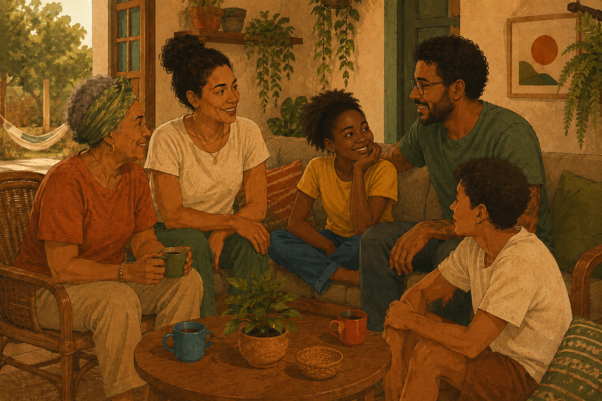
A aplicação das emoções expressas envolve a realização de entrevistas individuais com a família, conhecida como Entrevista Familiar de Camberwell (EFC). Nela, perguntas são feitas sobre a pessoa em acompanhamento psicossocial e, a partir das respostas obtidas, uma escala é construída. Considera-se como alto nível de emoção expressa quando se identificam seis ou mais comentários críticos, relatos que demonstram hostilidade e escores elevados de superenvolvimento emocional. Pesquisas sugerem que há uma correlação entre o desenvolvimento de novas crises e o alto nível de emoção expressa. Altos níveis de cordialidade e comentários positivos são considerados fatores protetores para recaídas ou agravos em saúde mental.
Os resultados obtidos por meio das emoções expressas possibilitam maior entendimento sobre as dinâmicas familiares das pessoas acompanhadas, permitindo identificar vulnerabilidades nas relações e, a partir disso, desenvolver estratégias para mediar conflitos, potencializar habilidades de relacionamentos e reduzir o contato com pessoas de escores mais elevados. Da mesma forma, fortalecer vínculos com as pessoas de escores menores, ampliar a rede de apoio e identificar preconceitos e desinformações quanto à pessoa referida e aos transtornos mentais. Importante ressaltar que a medida de EE apresenta variações no decorrer do tempo, podendo ser utilizada como estratégia de avaliação dos caminhos construídos para o cuidado, como no projeto terapêutico singular (PTS).
Ainda que em seu início tenha sido destinado para um diagnóstico específico (pessoas com esquizofrenia), atualmente o seu uso tem se mostrado positivo para as variadas condições psicossociais. Também é possível utilizar das emoções expressas para analisar a relação entre profissionais de saúde e usuários dos serviços de saúde mental, identificando vulnerabilidades e potências nas equipes de referência.
Crise, vulnerabilidades e assistência social
Grande parte das necessidades percebidas na atuação do apoio à crise está vinculada a uma política pública vizinha à saúde, a Política Nacional de Assistência Social (PNAS). Consolidada em 2004, seus objetivos, diretrizes, fluxos e outros processos possibilitaram a organização do Sistema Único de Assistência Social (SUAS), direcionando as ofertas de serviços territorializados, de acordo com o grau de complexidade de cada situação. A Assistência Social organiza três níveis de atenção e serviços: a Proteção Social Básica (PSB), a Proteção Social Especial de Média Complexidade e a Proteção Social Especial de Alta Complexidade.
Tal sistema busca, de acordo com Sposati (2009), prevenir contextos intensos de desamparo e desproteção:
A ideia de proteção social exige forte mudança na organização das atenções, pois implica superar a concepção de que se atua nas situações só depois de instaladas, isto é, depois que ocorre uma desproteção. A aplicação ao termo “desproteção” destaca o usual sentido de ações emergenciais historicamente atribuído e operado no campo da assistência social. A proteção exige que se desenvolvam ações preventivas (Sposati, 2009, p. 21).
Serviços de Proteção e Atendimento Integral à Família (PAIF)
Geralmente, são compostos de profissionais do serviço social e da psicologia. Realizam atendimentos psicossociais, com o objetivo de analisar a realidade do sujeito, da família e da comunidade e de construir estratégias para transformação das condições que estão presentes, além de fortalecer a função protetiva da família e da comunidade, promover o acesso aos direitos sociais, bem como desenvolver a qualidade de vida de pessoas e grupos. Fomentam a construção, execução e avaliação conjunta do Plano de Acompanhamento Familiar, uma espécie de projeto terapêutico singular (PTS) do SUAS. Para tanto, pode dispor de atendimentos individuais, atividades em grupo, visitas domiciliares e institucionais.
Tais serviços devem respeitar a heterogeneidade das populações e organizações sociais dos territórios, dialogando com estas para efetivação das ações. Também se orientam para o combate às diversas formas de violências e discriminações. Suas ações continuadas podem fazer uso de estratégias que articulem atividades culturais, artísticas, de esporte e de lazer. Apresentam amplo leque de intervenção social, devendo realizar o devido acolhimento dos ciclos de vida/desenvolvimento humano.
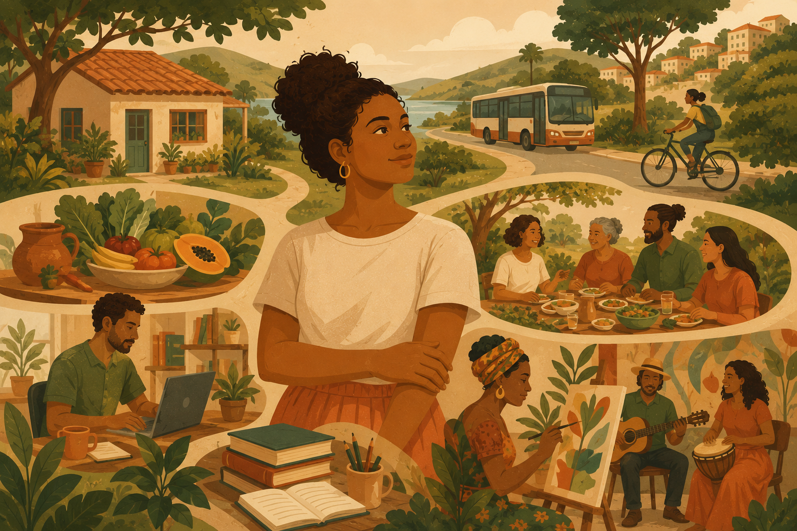
Como expresso no nome do serviço, o “Atendimento Integral” implica a garantia de direitos que atravessam várias políticas, como as de educação, saúde, habitação, segurança alimentar e nutricional, segurança pública, trabalho, emprego e renda, entre outras – intersetorialidade necessária para alcançar tais objetivos. Como exemplo, podemos citar a organização do Cadastro Único, programas de transferência de renda (Programa Bolsa Família, entre outros), benefícios sociais (Benefício de Prestação Continuada para Pessoa Idosa e Pessoa com Deficiência), Tarifa Social de Energia Elétrica, mobilidade urbana etc.
Serviço de Convivência e Fortalecimento de Vínculos (SCFV)
Em geral, são compostos de profissionais da área da educação (pedagogia, letras etc.) e por educadores sociais. Organizam atividades de convivência em grupos, dividindo as pessoas do território pelo momento do desenvolvimento e suas demandas específicas (crianças até 6 anos, de 7 a 15 anos, de 16 a 17 anos, de 18 a 29 anos, de 30 a 59 anos e de 60 anos em diante). Abordam questões referentes a garantias de direitos, à prevenção do risco social e ao fortalecimento de vínculos familiares e sociais. Devem estar em constante diálogo com o serviço anterior, o PAIF, para execução do Plano de Acompanhamento Familiar.
As ações e os serviços dos Centros de Referência em Assistência Social têm alguns objetivos específicos que atravessam os contextos de crise em saúde mental, em especial para populações mais vulnerabilizadas. Nos dediquemos brevemente a elas.
Combate à fome: segurança alimentar e nutricional
A garantia do direito à alimentação em quantidade e qualidade suficiente é o objetivo principal da Política Nacional de Segurança Alimentar e Nutricional (PNSAN). No Brasil, diversas ações e serviços buscam alcançar a erradicação da fome, como o Programa de Aquisição de Alimentos (PAA), os Restaurantes Populares, as Cozinhas Comunitárias, o Programa Nacional de Merenda Escolar, a Rede Brasileira de Banco de Alimentos, a Política Nacional de Agricultura Familiar, entre outros.
De modo geral, nota-se um estresse crescente à medida que o acesso à qualidade e à quantidade de alimentos reduz, impondo ao sujeito adotar medidas de sobrevivência que afetam diretamente seu contexto de saúde-doença: a priorização de alimentos menos nutritivos, mais baratos, com maiores durabilidade/validade e quantidade. Em grupos familiares maiores, os cuidadores primários também adotam medidas como reduzir o próprio consumo para favorecer os filhos.
A Escala Brasileira de Insegurança Alimentar (EBIA) classifica quatro níveis de dificuldades para o acesso à alimentação adequada. São eles:
Segurança alimentar: os moradores do domicílio têm acesso regular e permanente a alimentos de qualidade e em quantidade suficiente;
Insegurança alimentar leve: apresentam comprometimento da qualidade da alimentação em detrimento da manutenção da quantidade percebida como adequada;
Insegurança alimentar moderada: apresentam modificações nos padrões usuais da alimentação entre os adultos concomitante à restrição na quantidade de alimentos entre os adultos;
Insegurança alimentar grave: são caracterizados pela quebra do padrão usual da alimentação com comprometimento da qualidade e redução da quantidade de alimentos de todos os membros da família, inclusive das crianças residentes neste domicílio, podendo ainda incluir a experiência de fome (Brasil, 2022).
Estratégias para o habitar
Junto com o trabalho e a rede social, habitar faz parte dos três fundamentos no processo de reabilitação e inserção. E ela não se refere apenas à estrutura física da casa, mas aos modos de ocupação do espaço, o que pode incluir as necessidades de hospitalidade, ou seja, o direito a um lugar de acolhida em momentos em que a equipe ou a própria pessoa julgue necessário – a acolhida integral nos serviços CAPS 24 horas ou em outros equipamentos comunitários.
A questão do habitar deve aparecer, então, nos projetos coproduzidos entre usuários e trabalhadores. É fundamental para pensar a mudança de modelo (de centrado no hospital para o território e a rede de relações comunitárias) e um determinante social importante para a saúde geral.
Parte dessa demanda por moradia das pessoas com questões persistentes de saúde mental foi abarcada na política federal ao se instituir moradias apoiadas para ex-moradores de hospitais psiquiátricos, os Serviços Residenciais Terapêuticos. Mas a outra parte da demanda precisa ser pensada em âmbito singular e coletivo, aliado aos movimentos sociais de moradia e terras.
Pesquisas com esse público sobre os modos de morar apontam que aqueles que vivem em serviços residenciais terapêuticos têm rede social aumentada e aumento no nível de contratualidade, prescindindo quase que totalmente de internação, mas ainda sofrem com a carência de processos sistemáticos de reabilitação psicossocial e de falta de apoio do trabalho dos cuidadores, ou seja, ficam isolados em relação aos CAPS. Já aqueles que têm moradias próprias, não necessariamente com a casa comprada, apresentam criativa diversidade nos modos de construir a habitação, autonomia e contratualidade, e muitos recebem apoio institucional para organização dos variados aspectos dessa moradia.
Nos últimos anos, as pesquisas sobre o Housing First, ou Moradia Primeiro, vêm trazendo dados significativos que se coadunam com o que já falamos neste curso: a melhora nas condições gerais, nesse caso de moradia, interfere positivamente na diminuição do uso de substância, na adesão ao tratamento e na diminuição das internações. O HF é um programa que surgiu nos anos 90 em Nova York, como intervenção para o crescente número de pessoas em situação de rua na cidade. O Housing First mostra que a garantia de direitos independe de critérios como abstinência, bom comportamento ou ausência de sintomas, e na verdade é condição para o tratamento. O modelo de casa primeiro deixa claro que o uso de drogas não vem antes, necessariamente, do que a falta de moradia, como argumentam aqueles que estabelecem o uso de drogas como um problema moral.
Você conhece os grupos que discutem as necessidades de moradia, da população em geral, na sua cidade ou bairro?
Que tal combinar uma conversa com lideranças na assembleia ou participar de uma reunião aberta?
Existem usuários do seu território que moram em ocupações ou estão vinculados a movimentos sociais de moradia?
Como está a relação do CAPS com a SRT de referência?
Nesse âmbito, sugerimos você acessar o compilado de estudos indicando a eficácia do programa Housing First, disponível em:
Ademais, sugerimos a você acessar os seguintes vídeos:
• Residências terapêuticas: o fim de um ciclo de internações
A outra forma importante para pensar o habitar é a hospitalidade que oferecemos ou que é possível articular no território. Por vezes o usuário passa o dia todo no serviço, passa a noite e o dia, ou às vezes só a noite. Pode estar também em Unidade de Acolhimento para adultos, destinada a pessoas com necessidades decorrentes do uso de crack, álcool e outras drogas, ou em Unidade de Acolhimento Infantojuvenil, serviços que trabalham o morar em caráter transitório e vinculados aos respectivos CAPS AD e IJ. Ou, ainda, o usuário pode estar em algum equipamento de proteção social.
Como é oferecido esse espaço para determinado usuário? A requisição do usuário, mesmo quando a equipe não identificou ainda necessidade, é ouvida como? Como o usuário se apropria e interage com o espaço onde mora? Quais são as dificuldades apresentadas pela equipe na interação com aquele usuário enquanto ele está sendo recebido no CAPS, na UA ou no SRT?
Pensar no habitar para pessoas usuárias dos serviços de saúde mental exige novamente invenção e apoio institucional. No Brasil, tivemos experiências interessantes de repúblicas ou lares abrigados, mesmo antes da legislação que instituiu os serviços residenciais terapêuticos (SRT). O norte importante é o mesmo de qualquer outra estratégia, indireta ou imediata: transformar um momento que antes era de tutela como opressão para um momento de maior possibilidade de vivenciar isso como emancipação, isto é, morar como um direito que pode precisar ser apoiado por instituições e pessoas da rede de conexões, e não como controle, incapacidade e diminuição ainda maior de autonomia.
A hospitalidade no CAPS ou nas UA, apesar de ser eficaz para evitar internações, não pode ser entendida como internação, pois exige intervenções mais complexas, mesmo que transitórias. A equipe deve pensar em como acolher sem que aquilo vire simplificação da demanda que o/a usuário/a traz. Estratégias complexas que exigem pensar como determinado espaço é habitado por aquela pessoa. É um dispositivo que também não pode ser usado como resposta única para os momentos de crise, pois isso seria mais uma vez reduzir a demanda.
O CAPS, assim, não tem leitos, tem camas, e o usuário deve ter espaço para guardar seus pertences e usar suas próprias roupas, pode e deve receber visitas ou realizar saídas, mesmo que acompanhado, para que sua vida sofra o mínimo de rupturas possíveis e seja possível a expressão singular de sua vida.
Mesmo sabendo da demanda alta de muitos territórios pela acolhida noturna, a hospitalidade deve ser vista como direito do usuário ao acolhimento em situações que este julgar necessário, mediado e negociado com a equipe. É importante que haja discussão em assembleia sobre a acolhida integral ou noturna, coletivizando as decisões sobre habitar aquele espaço.
A equipe tem critérios para incluir os usuários nos dispositivos de morar, habitar e hospitalidade?
Que critérios são esses?
Que tal abrir a discussão na assembleia do CAPS e nas reuniões do conselho gestor?
A Política Nacional de Assistência Social, por meio de outro dispositivo, oferta serviços voltados a pessoas em situação de rua: o Serviço Especializado de Abordagem Social. Ofertado pelo Centro de Referência Especializado em Assistência Social (CREAS), as ações realizadas alcançam crianças, adolescentes, adultos, idosos, migrantes e demais pessoas e grupos que, por intermédio da permanência na rua, conseguem sobreviver.
Essa política tem como objetivos principais levantar as demandas, garantir os direitos, potencializar estratégias de sobrevivência, fomentar o acesso às políticas públicas, promover a inclusão social, desenvolver o processo de saída da rua (para aquelas pessoas que desejem) e reconstruir os vínculos familiares, sociais e comunitários. As ações devem dar conta da complexidade das demandas apresentadas pelas pessoas, podendo variar de emitir segunda via para documentos de identificação pessoal até encaminhamentos para o Centro de Atenção Psicossocial Álcool e outras Drogas (CAPS AD) e outros dispositivos.
Outro importante serviço constituído para atender às demandas dessas populações é o Centro de Referência Especializado para Pessoas em Situação de Rua (Centro POP). São instituições públicas voltadas ao acolhimento, à guarda de pertences, à higiene pessoal, ao acesso à alimentação, ao atendimento psicossocial, à realização de atividades individuais e coletivas que objetivem a socialização, o fortalecimento de vínculos familiares e comunitários, bem como a promoção da autonomia das pessoas e famílias acompanhadas.
Cabe destacar que o CREAS, o Centro POP e o serviço de Abordagem Social fazem parte das ações de Média Complexidade do Sistema Único de Assistência Social, considerando essa demanda como prioritária, restaurativa e mais complexa que as ações preventivas. Aqui o risco social, as violências e a fragilidade de vínculos já operam no contexto das relações sociais dessas pessoas e grupos. Estar na rua, também para a Assistência Social, é estar em situação de maior desproteção, desamparo e desfiliação social.
Agora, clique em cada ferramenta e arraste para dentro da caixa.
Programa De Braços Abertos
O Programa De Braços Abertos (DBA), em São Paulo, entre os anos de 2013 e 2017, foi um programa importante de promoção de moradia e renda intersetorial, sob a ótica da redução de danos, fruto de interlocução entre Secretarias da Saúde, Assistência Social, Segurança Pública, Cidadania e Direitos Humanos, entre outros. Tinha por objetivo promover a reabilitação psicossocial de usuários de drogas em situação de vulnerabilidade social por meio da oferta de um pacote de direitos e de ações assistenciais: contratos de trabalhos formais estabelecidos junto à Prefeitura Municipal de São Paulo – serviços de limpeza urbana, serviços gerais em prédios da administração pública e moradia em hotéis espalhados pela cidade. Dois anos depois de implementado, pesquisa apontou que 88% dos beneficiários da ação afirmam ter reduzido drasticamente o consumo de crack.
Infelizmente, o programa foi desarticulado e definhou nas gestões municipais posteriores.
Nesse âmbito, sugerimos você acessar os seguintes vídeos:
• #Cracolândia: Quem vive nos hotéis sociais do Programa De Braços Abertos?
• O Programa De Braços Abertos
• Mais de 88% dos beneficiários do Programa De Braços Abertos reduziram uso de crack
Housing First no Brasil
Observou-se um aumento expressivo (140%) da população em situação de rua entre setembro de 2012 e março de 2020. Os serviços de acolhimento provisório ou emergencial usualmente são avaliados pelas pessoas em situação de rua como insatisfatórios, para dizer o mínimo.
Em Curitiba, em 2018, um projeto-piloto foi implementado, o “Moradia Primeiro Curitiba” e tem-se comprovado uma proposta viável e eficaz. Atualmente, o projeto atende a 5 moradores em 4 unidades residenciais, seguindo a metodologia, com recursos privados e contando com o reconhecimento do governo federal. As pessoas atendidas recebem uma moradia individual (ou para família) mobiliada e com os principais utensílios para o início de sua residência.
Além do acesso ao domicílio, os participantes / as participantes contam com o acompanhamento de uma equipe especializada para integração com a comunidade e para resolução dos problemas que identificam como desafios para seu bem-estar, tais como: emprego, acompanhamento psicossocial, tratamento de saúde e educação financeira. A equipe é formada por voluntários.
O projeto, que já entra em seu terceiro ano de aplicação, continua acompanhando os mesmos moradores e moradoras, sem nenhuma desistência ou caso de desligamento, chegando a uma taxa de 100% de retenção das moradias.
Nesse âmbito, acesse o Guia Brasileiro de Moradia Primeiro, disponibilizado pelo governo federal.
Soteria House – Casa Soteria
O termo “soteria” deriva de palavra grega antiga que significa libertação, preservação ou salvação. Os psiquiatras Loren R. Mosher e Voyce Hendrix e um grupo de colegas se juntaram e fundaram a Casa Soteria, originalmente na baía de São Francisco, Califórnia, Estados Unidos, durante os anos 1970 e o começo dos anos 1980. Desde então vem sendo implantada em diversos outros locais dos Estados Unidos e em países europeus, como Inglaterra, Suíça, Suécia, Finlândia, Alemanha, Hungria, entre outros. Recusando o uso da medicação antipsicótica como primeira opção de tratamento, tais iniciativas tomam como foco a necessidade de permitir aos indivíduos atravessarem a sua experiência de psicose com um mínimo possível de interferência e o máximo possível de suporte psicossocial.
Seus princípios básicos incluíam:
• oferecimento de um meio terapêutico pequeno, acolhedor, na comunidade;
• uma equipe formada por pessoas leigas;
• preservação do poder pessoal, das redes sociais e das responsabilidades compartilhadas;
• um estilo relacional fenomenológico, com o objetivo de dar sentido à experiência subjetiva da psicose da pessoa;
• um entendimento da experiência psicótica ‘estando com’ e ‘fazendo com’ os clientes;
• nenhuma, senão doses baixíssimas de medicação antipsicótica – com todas as drogas psiquiátricas sendo tomadas a partir de uma posição de escolha e sem coerção.
A Casa Soteria original não era um hospital, nem um Centro de Saúde Mental (CSM), seu programa não era dirigido por médicos (ou enfermeiros) e, mesmo assim, admitia apenas clientes que seriam hospitalizados.
Nesse âmbito, sugerimos você acessar os seguintes links:
Acolhimento institucional
Serviços que integram a Proteção Social Especial de Alta Complexidade, em função das demandas que acolhem cotidianamente, 24 horas por dia. São instituições de caráter domiciliar, voltadas ao acolhimento de pessoas, famílias e/ou grupos com vínculos extremamente fragilizados ou rompidos. Tais dispositivos devem garantir a proteção integral das pessoas acolhidas, respeitando seus ciclos de vida, costumes, orientações sexuais, orientações religiosas, identidade de gênero e arranjos familiares.
Os vínculos com a comunidade devem ser mantidos, buscando a inclusão das pessoas com diversas comunidades e instituições, de acordo com as demandas apresentadas por elas. Crianças com escolas e Centros de Atenção Psicossocial Infantil (CAPSi), por exemplo. Por se tratar de demandas complexas, tais serviços apresentam alto nível de relações com o Poder Judiciário, como os Ministérios Públicos e suas diversas Procuradorias e os Tribunais de Justiça.
Não é difícil mensurar como estar em situação de rua, ou em situações de risco em relação à moradia, opera como vulnerabilidade e risco intenso para a emergência de crises diversas, incluindo na saúde mental. Tais contextos frequentemente estão associados a rupturas de vínculos familiares e sociais, à experimentação de conflitos e violências das mais diversas, a processos de desterritorialização intensos, como migração e conflitos socioambientais, entre outros. Atualmente, a Política Nacional de Habitação busca a promoção da moradia digna para pessoas em situação de vulnerabilidade social. A Lei nº 11.124/2005 é um documento importantíssimo para ampliar o debate sobre a temática e garantir o acesso a esse direito fundamental, pois institui o Sistema Nacional de Habitação de Interesse Social.
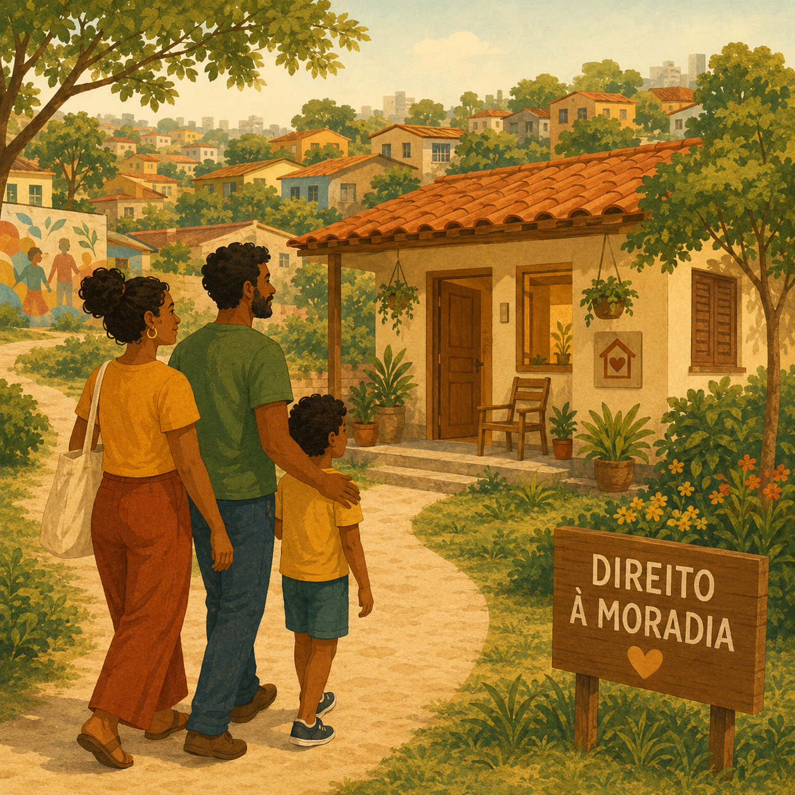
O programa Minha Casa, Minha Vida, retomado em fevereiro de 2023, ampliou o espectro de critérios para adesão das famílias a ele, estando suas prioridades de atendimento assim configuradas:
[...] I – que tenham a mulher como responsável pela unidade familiar;
II – de que façam parte:
a) pessoas com deficiência, conforme o disposto na Lei nº 13.146, de 6 de julho de 2015 (Estatuto da Pessoa com Deficiência), inclusive aquelas com transtorno do espectro autista, conforme a Lei nº 12.764, de 27 de dezembro de 2012, devendo os imóveis destinados a essas pessoas ser adaptados à deficiência apresentada;
b) pessoas idosas, conforme o disposto na Lei nº 10.741, de 1º de outubro de 2003 (Estatuto da Pessoa Idosa), devendo os imóveis destinados a essas pessoas ser adaptados às suas condições físicas;
c) crianças ou adolescentes, conforme o disposto na Lei nº 8.069, de 13 de julho de 1990 (Estatuto da Criança e do Adolescente);
d) pessoas com câncer ou doença rara crônica e degenerativa;
III - em situação de vulnerabilidade ou risco social, conforme a Lei nº 8.742, de 7 de dezembro de 1993 (Lei Orgânica da Assistência Social);
IV - que tenham perdido a moradia em razão de desastres naturais em localidade em que tenha sido decretada situação de emergência ou estado de calamidade pública;
V - em deslocamento involuntário em razão de obras públicas federais;
VI - em situação de rua;
VII - que tenham mulheres vítimas de violência doméstica e familiar, conforme o disposto na Lei nº 11.340, de 7 de agosto de 2006 (Lei Maria da Penha);
VIII - residentes em área de risco;
IX - integrantes de povos tradicionais e quilombolas (Brasil, 2023).
O programa ainda garante que municípios, estados e o Distrito Federal incluam novas prioridades em consonância com as demandas dos seus territórios.
Outras iniciativas também foram construídas para redução de vulnerabilidades habitacionais, como o Aluguel Social, o Auxílio-Moradia, o Cheque-Moradia ou outros benefícios eventuais. Por meio delas, a União, os estados, o Distrito Federal e os municípios oferecem recursos temporários para que pessoas e famílias possam alugar e/ou reformar imóveis, principalmente em contextos de calamidade pública (enchentes, deslizamentos, entre outros). Para tanto, é necessário o encaminhamento para os Centros de Referência de Assistência Social (CRAS) do território. Por intermédio deles, a família deve realizar o Cadastro Único e solicitar os benefícios com a equipe psicossocial da instituição. Cabe destacar que existem diferenças importantes entre estados e municípios na efetivação dessas políticas, e é preciso averiguar como está a implementação desse benefício no seu território.
As residências inclusivas são casas comunitárias organizadas pelo Sistema Único de Assistência Social (SUAS) para acolher jovens e adultos com deficiência em situação de dependência que não têm apoio familiar ou condições de morar sozinhos, garantindo um ambiente adaptado e integrado à comunidade em vez de instituições isoladas. Essas residências, com capacidade reduzida e funcionamento 24 horas, oferecem apoio qualificado e personalizado para fortalecer a autonomia, o protagonismo e a participação social dos moradores, além de promover convivência comunitária e vínculos familiares quando possível, rompendo com práticas segregacionistas e ampliando direitos e cidadania dessa população.
Nesse âmbito, sugerimos você acessar as Orientações sobre o Serviço de Acolhimento Institucional para Jovens e Adultos com Deficiência em Residências Inclusivas, disponível em:
Home Again (Índia)
O projeto, da organização Mariyasadanam, é uma iniciativa de reabilitação que funciona como uma casa de transição, ajudando os residentes a avançar para uma vida independente e para a reintegração social. O serviço é impulsionado pela convicção de que viver na comunidade, em um ambiente familiar ou doméstico, é um direito humano básico. Operam oito casas em quatro distritos do estado de Kerala, no extremo sudoeste da Índia, e oferecem cuidado e apoio a 40 residentes. Cada casa é gerida por cuidadores treinados que asseguram atenção personalizada, dignidade e bem-estar holístico. O Home Again promove recuperação, empoderamento e inclusão, oferecendo a cada indivíduo a oportunidade de viver uma vida com dignidade e propósito dentro da comunidade.
Moradias comunitárias autogeridas por ex-pacientes psiquiátricos, foco em autonomia e reintegração social.
KeyRing (Reino Unido)
É uma rede de moradias com apoio leve, em que moradores se ajudam mutuamente e vivem com independência. Carl Poll e Greg Willdigg perguntaram às pessoas o que elas queriam da vida e uma imensa maioria disse que:
• ter sua própria porta da frente;
• ficar por aí com pessoas de quem gostavam;
• ser amado e amar;
• fazer coisas de que gostavam.
Então, desde 1990, praticam, e com sucesso, a ideia de um mundo acolhedor com comunidades que celebram as habilidades e os talentos de todos. Começam com os pontos fortes e as habilidades das pessoas com quem trabalham e da comunidade em que vivem. Mostram na prática que é possível fazer e ser referência de outras pessoas que foram “postas de lado” pela sociedade.
Nesse âmbito, sugerimos você acessar os seguintes links:
• KeyRing
Estratégias de trabalho, renda e emprego
Essas estratégias interferem de maneira material e imediata na vida das pessoas que são acompanhadas e constituem-se como grandes desafios para os usuários e as equipes: a inclusão na vida produtiva. Mas existem inúmeras maneiras de pensar essa inclusão e a circulação de bens para as pessoas acompanhadas e que podem nos ajudar a sair da lógica da caridade e questionar a tutela do louco.
Agora, clique em cada ferramenta e arraste para dentro da caixa.
Programa de Volta para Casa
O Programa de Volta para Casa (PVC) completa 20 anos e é reivindicação histórica do movimento social e dos atores da Reforma Psiquiátrica. Um dos principais instrumentos no processo de reabilitação psicossocial é uma política pública brasileira criada em 2003 para promover a reintegração social de pessoas com transtornos mentais que sobreviveram aos longos períodos de internação hospitalar.
Estudos recentes, que pesquisam os efeitos longitudinais, indicam que o programa está cumprindo seu objetivo, de acordo com a Lei nº 10.708/2003, de “assistência, acompanhamento e integração social, fora de unidade hospitalar”, como um auxílio à reabilitação psicossocial, induz novas relações, com diversas maneiras de contratualidade possíveis. As pessoas passaram a ocupar concretamente um outro lugar na sociedade a partir da construção material de variadas formas de pertencimento, de morar, de se comunicar e de se relacionar.
Conheça a história da dona Minervina, de 94 anos, que ficou por mais de 60 anos em manicômio e agora recebe o PVC. Acesse em:
Trabalho e renda e a Política de Assistência Social
A Política Nacional de Assistência Social (PNAS) compreende que o acesso à renda mínima é de fundamental importância para o pleno desenvolvimento de pessoas, famílias e da comunidade. Estabelece alguns critérios para o acesso a programas de transferência de renda e outros benefícios sociais, como o Programa Bolsa Família (PBF): a renda individual da pessoa (após cálculo da renda familiar) deve ser de até um sexto do valor do salário mínimo. Em geral, o valor individual é de R$ 218 mensais, porém algumas condições específicas ampliam o montante transferido, como o Benefício da Primeira Infância (0 a 6 anos) e o Benefício Variável Familiar Nutriz (para crianças de até seis meses de idade). Importante frisar que o precário acesso à renda também potencializa as vulnerabilidades em outros aspectos, como a habitação, a segurança alimentar e nutricional, o fortalecimento de vínculos familiares e sociais, a educação e a intensificação de relações violentas.
O acesso à renda também é fomentado a partir de processos formativos profissionalizantes, visando à qualificação para o mercado de trabalho e/ou para o incentivo de práticas autônomas na prestação de serviços e comercialização de produtos. Panificação, confeitaria, artesanato, cursos de estética, precificação e diversas outras áreas podem ser acessadas por meio dos serviços dos Centros de Referência de Assistência Social.
O Benefício de Prestação Continuada (BPC) também é um importante instrumento para o manejo de crises em saúde mental, em especial para aquelas pessoas que, em função de suas condições físicas e psíquicas, não apresentam condições de retomar suas atividades ocupacionais (BPC para pessoas com deficiência) e para pessoas com mais de 60 anos (BPC idoso). O benefício mensal é no valor de um salário mínimo.
Projetos de geração de renda e economia solidária: coletivos de trabalho
Devemos lembrar que trabalho não é sinônimo de emprego (Kinker, 2011)! A relação com o trabalho deve ser mudada para que as pessoas com questões de saúde mental exerçam a escolha pelo trabalho e não sejam só excluídas dele. Existem no país inúmeras experiências riquíssimas, mais ou menos vinculadas a serviços de saúde, e que constituem uma colcha bonita de fomento de autonomia, emancipação e apoio entre pares, incluem produção de produtos alimentícios e artesanais, reciclagem, estamparia, confecção, agricultura, prestação de serviços e comercialização de artigos.
A literatura especializada tem vastos relatos de como a economia solidária e estratégias de inclusão social pelo trabalho constituem importante dispositivo de afirmação da cidadania, emancipação e reinserção social de pessoas em sofrimento psíquico (Lussi; Pereira, 2011; Mazaro; Lussi, 2023).
Assista ao filme "Si Può Fare - Dá para Fazer” e entenda melhor o trabalho das cooperativas sociais.
A economia solidária e o cooperativismo social têm uma longa história de parceria com a saúde mental, e é um eixo importante das discussões sobre outras formas de trabalho.
Centros de Convivência e Cooperativas (CECCOS)
Os CECCOS são dispositivos da política pública de saúde mental voltados à promoção da convivência, da inclusão social e da cidadania, funcionando como espaços territoriais abertos à comunidade. Nesses espaços, o cuidado se produz por meio da participação em atividades coletivas, culturais, artísticas e de trabalho, nas quais a centralidade não está no diagnóstico ou na doença, mas na existência e no protagonismo das pessoas, não só dos usuários dos serviços de saúde mental.
Ao favorecer relações horizontais, o fortalecimento de vínculos sociais e iniciativas de economia solidária e geração de renda, os CECCOS atuam como estratégias indiretas de cuidado, sustentando a continuidade da vida no território, combatendo o isolamento e ampliando as possibilidades de inserção social de pessoas em sofrimento psíquico.
Algumas cidades como São Paulo, Belo Horizonte e Rio de Janeiro já contam com Centros de Convivência e são experiências bonitas e enriquecedoras.
Para conhecer o caso da Associação Suricato em Belo Horizonte, fruto de mobilização popular do movimento social e que tem papel importante na cultura da cidade, sugerimos você acessar os seguintes links:
• História
Recentemente, o Ministério da Saúde publicou a Portaria GM/MS nº 5.738/2024, que dispõe sobre os Centros de Convivência. Essa portaria é resultado de uma luta histórica de anos do movimento social e daqueles que trabalham com Centros de Convivência. Ela institui valores de incentivo e custeio para os Centros de Convivência (CECO), definindo-os como espaços de sociabilidade que promovem saúde mental, reabilitação psicossocial, convivência comunitária, acesso a direitos e atividades culturais, educativas, esportivas e de economia solidária.
Esses centros devem estar articulados com outros pontos de atenção da rede e atuar com princípios como solidariedade, participação coletiva, diversidade e protagonismo das pessoas. Também são estabelecidas regras sobre sua equipe, infraestrutura, procedimentos e modalidades conforme o tamanho dos municípios, além de diretrizes para financiamento e habilitação dos serviços junto ao Ministério da Saúde.
Para conhecer o caso da Associação Suricato em Belo Horizonte, fruto de mobilização popular do movimento social e que tem papel importante na cultura da cidade, sugerimos você acessar os seguintes links:
• Fórum dos Centros de Convivência (CECO) do estado do Rio de Janeiro
Outras experiências espalhadas pelo país
Ala Loucos pela X:
https://www.instagram.com/loucos_pela_x/
https://www.youtube.com/watch?v=3oP9gIWXfqc&t=8s
Associação Suricato:
https://www.youtube.com/watch?v=xZfD5uE7Mww
https://www.instagram.com/associacaosuricato/
SUStentando Habilidades (Belém/PA):
https://www.instagram.com/sustentandohabilidades/
Projeto Tear Guarulhos (SP):
https://www.instagram.com/projetotearguarulhos/
Armazém das Oficinas (Campinas/SP):
https://armazemoficinas.com.br/
Feira de Economia Solidária de São Paulo:
https://www.youtube.com/watch?v=D3W09LPPNm4
Maluco Voador (Paranoá/DF):
https://brasilia.fiocruz.br/nosnarede/mostra-de-experiencias/maluco-voador-musica-e-cultura-popular/
CAPS AD III Miriam Makeba:
https://www.instagram.com/silkemmetamorfose/
NUPE:
https://brasilia.fiocruz.br/nosnarede/mostra-de-experiencias/nupe-saude-mental-e-sustentabilidade/
Nesse âmbito, sugerimos você conhecer os seguintes documentos:
• Fórum dos Centros de Convivência (CECO) do estado do Rio de Janeiro